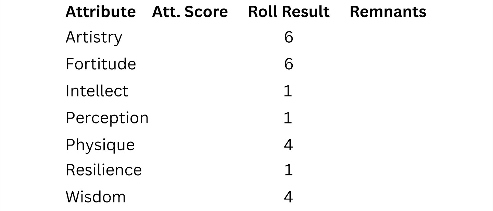
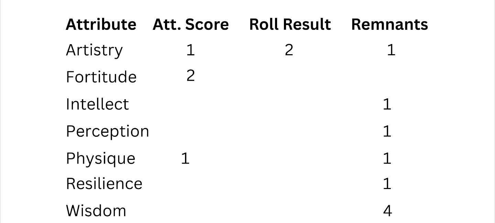

Character Creation
Character Creation in SORC begins, at the table, by establishing a character's alignment based on their backstory and moral outlook. Alignment (Lawful, Evil, or Neutral) determines which classes a player can access. Once alignment is set, players select a race and class, then allocate Attributes using a combination of dice rolls and point spending. As characters level up, players repeat the attribute allocation process to unlock Talents, Skills, and Traits (TST), which are tracked through the character's sheets and online records. A character's Level (Ch. Lvl) is a single unified progression shared across all classes they adopt, leveling up at Ch. Lvl 15 unlocks the Ch. Lvl 15 Abilities in every Class Tree they've invested in. Know before beginning: SORC's levels are earned over months of real play by design, but a character is empowered from their very first session, see The Long Road on Page 4.
The character's inventory tracks items without Penalty up to encumbrance limits, and additional character pages allow for tracking personal history, relationships, and achievements. Each character is assigned a Unique ID for online tracking, trading, and achievements.
The character Sheet serves as a central record, displaying key details like background, mission, reputation, and standing, along with customizable elements such as Portraits, armor, and weapons. Customization of a character is also available online, via SORC Beyond. Open Character Customization
Utilizing SORC Beyond, Players can save and export their characters as images or printouts, and have options for high-resolution Portraits reflecting their character's identity. Character pages can be customized with images, background info, and logs of ongoing progress, quests, discoveries, and personal notes.
Character information is organized on two sheets designed to help players manage and develop their character effectively. The two official sheets that come with are the Character Sheet and the Lore Sheet.
Note: GMs have their own GM Sheet where they keep track of campaign data.
Character Sheet
Displays key details such as name, race, class, level, and vital Statistics.
Character Details
Birth
Player's Name, Nickname, Character Portrait or Photo, Age, Gender and a Character Unique Identification (UID) which is a random 5 unit number combination exclusive to players that choose to delve into SORC Beyond's online features.
Age
Characters do not begin at a single fixed age. At creation, choose a character's starting age from a range centered on their race's Starting Age, two years below it to two years above it, a five-year spread in total (see each race's entry, below, and the Lifespan, Starting Age, and Retirement Age table, pg. 6). A character must always be portrayed as an adult. Whatever age is chosen becomes the character's actual Beginning Age going forward, and every formula that references it, Retirement Age, and the Growth (Beginning Age + Years) requirement under Rank, pg. 4, uses this chosen number, shifting that character's entire age range accordingly.
Character UID
Character ID's are RNG numbers provided by our servers and no two ID's are alike, to avoid conflict between online Characters that have the same name and to keep track of acquisitions.
Race
Upon creation, characters will choose between 40 races and subraces from three size categories; Goliath, Standard and Small. See races below.
Alignment
A character's alignment is determined by their backstory and is chosen during character creation. SORC has three alignment paths: Lawful (bound by tradition, order, and divine authority), Evil (driven by ambition, primal instinct, or forbidden magic), and Neutral (flexible and pragmatic, unconstrained by either pole). Each background carries alignment elements that reflect the character's moral framework, and the GM uses these to assign the character's starting alignment. The chosen alignment filters which classes a character can access. Two classes are exclusively Lawful, Avenger and Overseer. Four classes are exclusively Evil, Doom Knight, Warlock, Witch, and Tyrant. The remaining ten classes accept any alignment. Alignment can shift during play through character actions, mission statements, and the Fallen/Risen mechanics, but at creation, it is their foundational choice. A character's current alignment position is tracked on the Alignment bar of their Character Sheet's Progression Tracker, a spectrum running Lawful, Neutral, Evil. Note: a falling or rising character whose alignment drifts to Neutral loses the ability to learn new Abilities from the Class Tree they are leaving. See Fallen and Risen Classes on Page 3.
Class
Choose between 16 distinct Class Trees, each starting with a shared Tier before splitting into 3 Paths (48 total) and, further in, 3 Branches per Path (144 total)-all filtered by the chosen alignment. Characters can select multiple Class Trees freely, as long as they meet Trait Prerequisites (for instance, the Strength needed to wield a 2H giant's sword in the Barbarian tree) and alignment requirements. A character's Level (Ch. Lvl) is unified across all trees they adopt, so when they reach Ch. Lvl 20, they unlock the Ch. Lvl 20 Abilities in every class they've taken Abilities from. Abilities grow more powerful the deeper into a tree a character climbs, not evenly, each one further in is a meaningful jump over the last. Only one Class Tree, ever, may reach its Ch. Lvl 30 Ability, the capstone, and the single most powerful one a character will ever wield. Any other tree they've invested in stops at its Ch. Lvl 29 Ability instead, one short of its own capstone. A character can divvy their picks across trees however they like, one tree capped at 30 and a second at 29, or spread thinner across several trees for diversity, but every weapon-specific Ability still requires its class's proper Armament readied to activate (see Weapons Carried, pg. 4). Innate Aptitude and Inaptitude are the exception, passive and requiring no weapon of their own, see Innate Aptitude and Inaptitude, pg. 2. Note: Only classes bound to a Higher Power (Lawful and Evil classes) can Fall or Rise at Growth 20, transitioning into unique new Class Trees with different mechanics and progression. See Fallen and Risen Classes on Page 3 for details. Classes are covered in detail below.
Innate Details
Character Details are solely role playing Elements and the amount of detail provided here, is entirely up to the Player.
Developing Details
Height, weight and frame, cultural style, crest, tattoos/marks/scars, facial features, eye color, hair color and style, skin tone, and voice tone. Not applicable (N/A) and Unknown (UKN) can be used to fill out any details at the players' discretion.
Inventory and Value
This is where Characters list the items they have on their person. They can hold as many items as the Player wishes, without a Penalty, as long as the total weight stays within 50% of their carry capacity. See Encumbrance for thresholds and penalties.
Characters may also keep items in their Home or on their land, if they rent or own it. Banks and vaults and storage are also good for safe keeping; However, each home has its own space threshold, see Home and Family Page below. Players can also bury or stash items, and log them into their journals.
Background
A character's background is their back story which has led them to the exact position of their current status, and the foundation of their alignment. Each background contains moral and ethical elements, whether Lawful, Evil, or Neutral, that define how the character views the world. Modules provide curated backgrounds for players to choose from, each with its alignment listed in that module's appendix (further discussed in the GM Codex), visible to the GM and the players alike, since it's going to be shared with the player anyway. Players select a background knowing its alignment upfront, rather than blind. Players can also create their own custom background with the GM, with alignment considered as part of that creation rather than assigned afterward in secret. Once a background is chosen or created, its alignment locks in at that same moment; it cannot be changed afterward. The GM confirms the character's alignment during character creation, before the player chooses their race and class, since both depend on it.
Backgrounds answer questions like: Were you a stowaway, runaway, escapee, or sent on a pilgrimage? How did the party find one another? What drives each character's worldview? And finally, what is your Alignment and the Mission Statement (see below) of the character? Characters may create a detailed version of their story in their Lore Sheet and Journal Pages.
Mission Statement
The Mission Statement defines a character's goals, values, and purpose. It is both a personal reminder of what the character stands for and a tool that can shift their alignment during play. A character's mission statement must align with their assigned alignment, an Evil-aligned background calls for a mission statement rooted in ambition, vengeance, vindictiveness, or similarly Evil-aligned intent; a Lawful background calls for one rooted in duty, order, or protection; a Neutral background allows a pragmatic or self-interested goal that fits neither pole. For example, an Evil-aligned mission statement might be built around greed, power, vengeance, and revenge, pursued in the most evil way available to the character. A character's starting mission statement is built into their background and initial alignment, but as they progress through modules and face moral choices, their mission statement may evolve. If a mission statement drifts significantly from a character's starting alignment, through accumulated choices, accumulated Boasted and Exposed Titles, or deliberate action, it may trigger Fallen or Risen mechanics beginning at their next Growth, escalating through Growth 20, and culminating in a complete transformation into a new Class Tree with unique Abilities. These transformations are tracked by the GM on the GM Sheet and by the player on the Alignment and Falling/Rising bars of their Character Sheet's Progression Tracker, and are detailed in the Fallen and Risen Classes section on Page 3. Be warned: once a falling or rising character's alignment reaches Neutral, they can no longer learn new Abilities from the Class Tree they are leaving. Mission statements do not need to be completed, they define a character's throughline, not a checklist. Every background and mission statement ties a character to other MAC in the world, and whether a player pursues, ignores, or completes their mission statement, that connection carries its own consequences and rewards, playing out before, during, and after any attempt at completion. NPCs judge a character by how well their actions live up to what's expected of them, coming across as too neutral when a clear stance was expected, or drifting too far into Evil or Lawful extremes, can each draw judgment from Good-aligned and Evil-aligned NPCs alike. That judgment feeds directly into Stance (see Stance & Alignment and Standing Tiers, below), and an NPC who dislikes what they see may simply refuse to talk to the character at all. Mission progress and changes are recorded in a character's Lore Sheet and Journal Pages. See also Growth and Character Level Progression, below, for how leveling interacts with character progression.
Attributes
Attributes govern raw capability, how physically powerful, resilient, perceptive, charming, animated, and the like a Character is. Traits, covered in the next section below, determine how Characters apply that capability under pressure.
Attributes are the innate capacities characters are born with that allow them to perform certain cognitive and physical tasks. Unlike Traits, Attributes begin at 0 by default, regardless of race and class, except where a race's Innate Trait Adjustments would otherwise put a Trait score above its aligned Attribute Score before play even begins. Because a TST score can never exceed its aligned Attribute Score (see Traits, below), a race with a positive innate Trait bonus begins with that Trait's aligned Attribute raised to match it, see Starting Attribute Floor on each race's entry. Attributes serve many purposes, including as Prerequisites for gear, including Armaments and equipment, and to acquire talents, skills and Traits as well.
The seven Attributes; artistry, fortitude, intellect, perception, physique, resilience, and wisdom. Through their scores, purchased throughout progression, Attributes determine how strong a character is in a variety of areas, including; Abilities, talents, skills and Traits, referred to as Talents, Skills, and Traits (TST). Attribute Scores also serve as Prerequisites and more.
The Seven Attributes
Artistry (ART)
Articulation and Charisma, dexterity-based hand and eye coordination, body fluidity and crafting support.
Fortitude (FRT)
Physical resilience, endurance, and resistance to ongoing effects. Determines Apex, a Vitality capacity score equal to Fortitude's own score (see Apex, pg. 2).
Intellect (INT)
Mental acuity, spellcasting power, reasoning, and willpower.
Perception (PER)
Awareness, detection, intuition, and luck.
Physique (PHY)
Physical strength, speed, agility, and toughness.
Resilience (RES)
Magical resistance and protection from elemental damage.
Wisdom (WIS)
Knowledge, intuition, and insight.
Attribute Development
To develop Attributes, starting at Level 0 (character creation) and again at every new Character Level (Ch. Lvl), players roll 1d6 9 times, discard the two lowest results, and assign the remaining 7 results as points to their respective slots in the Attribute Repository. At Level 0, all results are assigned and locked in, once finalized, the character advances to Ch. Lvl 1.
Each Attribute can be assigned a number of points between 1 and 6 in its respective Repository slot, and those REM Points are spent to purchase: the score of the Attribute (default 3 REM Points each), and/or talents, skills and Traits TST (default 2 REM Points each) aligned with that Attribute, OR saved as Remnants. The main purpose of Remnants is to hold left over REM Points that players weren't able to spend on Attributes and/or TST.
Before ending the progression process, anything left over is considered a REM Point and can be saved until the next level where the rolling and REM Point spending process is repeated. No REM Points need to be spent on Attribute Score; they can be saved as Remnants to be spent on items later in the game. Remnants allow players to save REM Points they could not spend and use them in future levels. Remnants may also be saved to spend on special items later in the game. Once a REM Point is spent to purchase an Attribute Score or TST, it cannot be refunded, it's locked in. There's no turning back.
Although there isn't a minimum (Attributes can be 0), characters may not apply more than 2 points of their roll results to any given Attribute at every level of progression. No Attribute may exceed a score of 50. For example, at level 2, an Attribute Score may be 0, but can be no higher than 4 before the process ends.
The Attribute cap of 50 is a theoretical maximum, achievable only by dedicating 2 points per level to one Attribute for 25 levels. Because each Attribute is individually capped at 50 and points are spread across all Attributes, most characters will have one high Attribute and the rest significantly lower, encouraging specialization. Players should expect most Attributes to fall between 12-25 unless they deliberately hyper-specialize.
Example, Torv, Barbarian Mountaineer
| Attribute | Level Reached Score | Max Score (per lvl cap) |
|---|---|---|
| Intellect | 1 | 2 |
| Artistry | 5 | 10 |
| Resilience | 10 | 20 |
| Physique | 25 | 50 (cap) |
Torv's Physique reaches its intended stopping point by level 25. In the 5 levels remaining, he shifts his 2-point-per-level allocation to Resilience instead, gaining up to 10 more score there (2 per level x 5 levels). At level 30, any remaining REM Points are spent on talents, skills, or Traits (TST).
For a separate, fully completed character built this way from Level 1 through Level 30, see Kaida's Character Sheet below.
It's important to note that TST scores cannot be above the score of their aligned Attribute. So if a character has a score of 1 in physique, the score of one of its aligned Traits Strength may not be greater than 1. This keeps Attribute Scores relatively low because they are often used as modifiers.
Diagram 1 shows the Repository with the roll results and where the player assigned them.

Each score for an Attribute costs 3 REM Points with a score cap of 2 per level. Each TST, aligned to the Attribute, costs 2 REM Points. One example of a Trait alignment to an Attribute is the Trait Agility, which is aligned to the Attribute Physique.
Diagram 2 shows the Repository with the above roll results assigned to Attribute Score, held in the score results to spend on that, and saved as remnants where they can be spent later.

Above lets examine Artistry. The player assigned a roll of 6 to Artistry, purchased a score of 1 in the Attribute Artistry which cost 3 of the 6, kept 2 in the roll result to purchase one TST (whether it's a talent, skill or Trait) at a cost of 2, for a total of five spent and has 1 left over as a REM Point for the next Ch. Lvl. 3 + 2 + 1 = 6, which is the assigned roll value.
Let's examine Fortitude next. Here the max score of 2 was placed into the actual fortitude score, costing all 6 REM Points assigned as the FRT roll result. Although the player may not spend any REM Points on TST, because each score costs 3 REM Points, the character can use the score of 2 as a Prerequisite and modifier during their adventures.
Intellect, Resilience and Perception were all results of 1 and were both placed as Remnants. Looking at Wisdom, all 4 REM Points were allocated to the remnant slot of the Repository. These Remnants can be spent on special items later, or with caps and minimums in play, spent on Wisdom and its aligned TST.
Players first need a score of 1 in any Attribute before purchasing any TST aligned to it because 1 is the †default Prerequisite for purchasing TST. The default price for any TST is 2 REM Points. Again a TST score cannot exceed its aligned Attribute Score, so with that score of 1, a character can go no higher than 1 for any TST aligned to it. There isn't a maximum of TST types though, so with enough REM Points (Remnants), a character could have any number of TST with a score of, in this case 1.
Players have the freedom to allocate REM Points according to their preferences. These REM Points can enhance athletic or cognitive talents, attack and Protection Abilities such as evasion, Traits like strength and agility, allowing for a customized character build.
Notes to the GM, Using Attribute Scores
GMs are provided with detailed guidelines within campaign modules but may also use Attribute Score at their discretion, for example, when adventures go off-script, or when applying homebrew rules or Unique story elements.
Talents (TST)
Talents are specialized actions that characters acquire from their chosen Talent Trees. These actions come into play when characters encounter interactive challenges in the game world. A Scout may carve a branch into a tool or guide the party along a safer route. An Olympiad might leap across a chasm. A Hacker could manipulate security systems or decipher complex codes. A Thief might pick locks or stealthily pocket items with precision.
To access a talent from a Talent Tree, characters must first align themselves with that tree. Each alignment grants specialized gear that characters must carry to effectively use their talents. Players select talents during Character Creation, and these actions can be enhanced with each Ch. Lvl gained. Talent scores are capped at 45. REM Points spent on talent scores cannot exceed the score of the aligned Attribute.
Additional talent trees are released with each module and its expansions. See pg. 7 for a list of all available talent trees.
Talents are specific learned skills, Sneak, Sprint, Jump, Hack, Disarm Trap, and others. The talent score is the bonus factored into d100 rolls, and Attribute Prerequisites must be met for acquisition. For example, a Sprint talent score of 3 requires Physique 3 as its Prerequisite, when sprinting, the character adds 3 squares (15 ft.) to their base movement. The Agility Trait score also stacks, adding further to that sprint roll.
Talents are accessed through proficiency tiers, see Proficiency Tiers below.
Skills (TST)
Skills are specialized abilities directly tied to a character's chosen profession and form the backbone of their craftsmanship. Each profession provides access to a unique set of skills, allowing characters to perform intricate tasks, forging weapons, preparing elaborate meals, crafting potent remedies, that define their role and expertise within the game world.
Professions are unlocked by initially investing 2 REM Points, enabling REM Point allocation to skills during creation and progression. Skill scores are capped at 45. Skills progress through tiers (Apprentice, Journeyman, Expert, Artisan, Master, Grandmaster), each requiring aptitude points. Success with skills relies on experience, appropriate tools, recipes, materials, and often a workshop.
Additional professions are released with each module and its expansions. See pg. 7 for a list of all available professions.
Skills are accessed through proficiency tiers, see Proficiency Tiers below.
Crafting Resolution
Crafting is resolved through a d100 skill check against a Difficulty Score (DIFS) set by the GM. The DIFS depends on the item's complexity, rarity tier, and required quality. A character rolls d100, adds their relevant skill score plus any aligned Attribute modifiers, and compares the total to the DIFS.
Crafting Check Formula: d100 + Skill Score + Attribute Modifier vs. DIFS (further covered step-by-step in the GM Codex)
The Attribute modifier used depends on the specific skill, for example, a Blacksmith check might use Strength or Intellect, a Jeweler check uses Artistry or Intellect, and an Herbalist check uses Wisdom or Perception. The skill card or GM determines which Attribute applies.
Difficulty by Rarity: The GM may use the following as a baseline, or adjust based on complexity:
- Common: DIFS 40-50 (straightforward, well-understood designs)
- Uncommon: DIFS 55-65 (moderately complex, requires precision)
- Rare: DIFS 70-80 (intricate, demands mastery)
- Unique and above: DIFS 85+ (exceptional, near-legendary difficulty)
Success Outcomes: On a successful check, the character creates the intended item. The quality matches the rarity tier if the check was within normal success range. A critical success (96-100 roll) may grant a bonus property or improved quality tier. On a failure, the character wastes materials and time, or creates a flawed version (determined by the GM).
Resources Required: Crafting requires appropriate tools, a workspace (workshop, forge, etc.), materials, and time. All three must be available, missing any prevents the craft attempt. The time required varies by item complexity and is noted on each skill card or recipe.
Material Cost: The cost of materials is separate from the character's gold, materials are consumed during crafting. A failed craft consumes the materials but produces nothing of value. A successful craft consumes materials and produces the finished item.
Endurance and Crafting: Crafting is not combat and does not consume Stamina or Mana per turn. However, extended crafting sessions consume Endurance based on duration and physical intensity. Light crafting (jewelry, enchanting) may consume 1 Endurance per hour. Intensive crafting (blacksmithing, armor-making) may consume 2-3 Endurance per hour. The GM determines consumption based on the task. A character cannot engage in crafting if they lack sufficient Endurance for the planned duration.
Hobbies
Hobbies define a character outside of their Class, Reputation, Profession, and other systems. A hobbyist is never paid for their hobby, full stop, they pursue it purely for self-gratification, relaxation, and the chance to work in their own personal style, not for coin or commission. A character can still hold the same subject as an actual paid Profession, a Blacksmith who also hammers out trinkets on the side for no one but themselves is both at once, but the hobby side of that never earns a wage; the moment coin changes hands, it's the Profession doing the work, not the hobby. A hobby can come from a character's own background or culture, or be picked up from someone else's entirely, and it can come up during downtime while the player isn't the one at the table, or get woven directly into play itself. Like an archetype, a hobby says something about who a character is, and many carry a small, thematically appropriate benefit tied to what the hobby actually trains, though never as significant as a Talent, Skill, or dedicated Profession.
For example, a Performer used to holding a crowd's attention may find that same instinct sharpens their Deceit when bluffing. A Collector who has spent years cataloguing curiosities may be quicker to Appraise an item's true worth. A GM is free to grant a small, situational bonus like this when a character's hobby genuinely applies, it's a narrative hook first and a mechanical nudge second.
Many hobbyists travel with a memento or two related to their hobby, even mid-adventure. A pipe collector rarely goes anywhere without at least one pipe in their pack, a card player without a deck, and so on, small, personal items that take up little room but say a lot about who's carrying them.
A hobby's advantage isn't always a quiet one. A Pipe Smoker can blow a lungful of smoke into an opponent's face to catch them off guard mid-fight, no different in spirit than the Deceit a Performer leans on when bluffing. A Knitter who spins their own clothes from raw materials may turn out something genuinely fine, but the rules forbid selling it, the moment a hobby-made piece is sold for coin, it stops being a hobby and starts being a Profession, and that's not what the hobby was for.
Performer
| Hobby | Description |
|---|---|
| Performer | Sings, juggles, tells stories, or otherwise holds a crowd, purely for the joy of an audience. That same comfort holding attention can lend itself to Deceit when bluffing. |
| Fisherman | Spends any free hour with a line in the water, patience over urgency. Hunters and Cooks often pick this up naturally, reading water is a close cousin to reading tracks or knowing what's actually good to eat. |
Collecting
A Collector gathers a particular category of object obsessively, cataloguing and comparing pieces for the sheer love of the set. Years spent at it sharpens their eye for a thing's true worth when Appraising. A real collection needs somewhere to live, a home, a wagon, a vault, or a hiding place the collector marks themselves (a Wayfarer's Mark Spot Ability works well for this), beyond what a character can carry on their person within their encumbrance limit. The category is the character, a few examples:
- Stein Collector
- Tobacco Pipe Collector
- Watch Collector
- Trophy Collector
- Coin Collector
- Curio Collector
- Bottle Collector
- Map Collector
- Key Collector
- Gemstone Collector
- Feather Collector
- Seashell Collector
- Arrowhead Collector
- Medal Collector
- Mask Collector
- Doll Collector
- Miniature Collector
- Stamp Collector
- Book Collector
- Button Collector
- Weapon Replica Collector
Crafting and Making
- Carver - whittles wood into small trinkets, toys, or figures, purely for the craft of it, no coin involved.
- Knitter
- Whittler
- Basket Weaver
- Quilter
- Origami Folder
- Model Builder
- Candle Maker
- Soap Maker
- Rope Worker
- Embroiderer
- Calligrapher
- Hobby Potter
- Hobby Leatherworker
- Hobby Glassblower
- Gadgeteer
- Weaver
- Bookbinder
- Hobby Jeweler
- Toy Maker
Games and Wagering
- Card Player - always carries a deck, always up for a hand, win or lose.
- Gambler - can't resist a wager, cards, dice, or a bet on which raindrop reaches the sill first.
- Dice Player
- Riddler - collects riddles and puzzles the way others collect coins, and can't resist posing one mid-conversation.
- Board Gamer
- Arm Wrestler
- Knife Thrower
- Darts Player
- Sporting Wrestler
Outdoor and Nature
- Stone Skipper - can't pass still water without testing it, an old habit of finding the flattest stone and counting the skips.
- Wanderer - restless feet, always looking past the next hill just to see what's there.
- Stargazer - can name constellations most people have never noticed, and always knows which way is north.
- Birdwatcher - can identify a bird from a call alone, and has strong, mostly unwelcome opinions about which are the best.
- Gardener
- Hobby Beekeeper
- Hobby Forager
- Mountain Climber
- Cave Explorer
- Tide-Pooler
- Tree Climber
- Camper
Social and Storytelling
- Storyteller - never tells a tale the same way twice, and never lets the truth get in the way of a good one.
- Tavern Regular - knows every barkeep's name in a five-town radius, and every barkeep knows theirs.
- Singer
- Dancer
- Joke Teller
- Poet
- Toastmaster
- Matchmaker
Intellectual and Lore
- Book Worm - reads everything they can get their hands on, whether or not it's useful.
- Cartographer - sketches every place they've been into a personal map, useless to anyone but them, priceless all the same.
- Curio Hunter - hunts oddities, cursed trinkets, strange mechanisms, anything nobody can explain, for the thrill of finding it, not the profit of selling it.
- Amateur Historian
- Hobby Linguist
- Genealogist
- Cipher Enthusiast
- Debater
Habits and Small Vices
- Pipe Smoker - rarely without a pipe, real or unlit, the ritual matters as much as the smoke.
- Snuff Taker
- Tattoo Collector
- Tea Ceremony Keeper
Physical and Competitive
- Racer - can't resist a footrace, a wagon race, a dare to reach the tree line first.
- Juggler
- Tumbler
- Recreational Swimmer
- Sporting Archer
- Stone Lifter
- Tug-of-War Enthusiast
Animals
- Pet Keeper
- Hobby Falconer
- Insect Collector
- Hobby Horse Groomer
Odds and Ends
- Pack Rat - can't walk past something interesting without pocketing it, junk to anyone else, treasure to them.
- Doodler - sketches whatever's in front of them, a face, a building, a battle plan, mostly on scraps no one else will see.
- Graffiti Artist
- Ghost Story Collector
- Superstition Keeper
- Weather Predictor
Proficiency Tiers (Talents and Skills)
Talents and skills are organized into proficiency tiers. To access talents or skills within a tier, players must first spend REM Points to open that tier. Tiers must be unlocked in order, players cannot skip ahead. A talent or skill score cannot exceed its aligned Attribute score.
| Tier | Open Cost | Per Talent/Skill |
|---|---|---|
| Novice | 2 REM | 2 REM |
| Apprentice | 3 REM | 2 REM |
| Journeyman | 4 REM | 2 REM |
| Master | 5 REM | 3 REM |
| Grandmaster | 6 REM | 4 REM |
Proficiency Tier Cap
No tier may exceed a total accumulated score of 79 across all talents and skills within it. The individual cap is 45, this means one talent or skill may be fully maxed, leaving up to 34 points for the rest. This encourages diversity rather than stacking everything into a single entry.
Advancing to the Next Tier
To unlock the next tier, the total accumulated score across all talents and skills in the current tier must meet the advancement threshold.
| Advance From | Score Threshold |
|---|---|
| Novice → Apprentice | 10 |
| Apprentice → Journeyman | 25 |
| Journeyman → Master | 45 |
| Master → Grandmaster | 80 |
Example, Advancing Through Novice (Olympiad Talent Tree, PHY Aligned)
Level 1: The player rolls a 6 and assigns it to their PHY slot. They spend 3 REM Points on PHY(1) and 2 REM Points to open the Novice tier in Olympiad, saving 1 Remnant.
Level 2: Another roll of 6 assigned to PHY. Combined with the saved Remnant, they have 7 REM Points. They spend 3 REM Points on PHY(2) and 2 REM Points on a Novice talent (score 1), saving 2 Remnants. Novice total score: 1.
Level 3: Roll of 6 assigned to PHY plus 2 saved Remnants gives 8 REM Points. They spend 3 REM Points on PHY(3) and raise 2 more Novice talent scores at 2 REM Points each, saving 1 Remnant. Novice total score: 3.
Level 4: Roll of 6 assigned to PHY gives 6 REM Points plus saved Remnant (7 total). They spend 3 REM Points on PHY(4) and use the remaining 4 REM Points on 2 more Novice talent scores. Novice total score: 5.
Following this pattern, rolling well and focusing on one Attribute, the player reaches the Apprentice threshold of 10 around level 6-7, at which point they spend 3 REM to open Apprentice. A balanced character investing across multiple Attributes will reach Apprentice closer to level 10-12.
Note: Grandmaster tier is near end-game for proficiency. Refer to GM Codex for expanded proficiency rules, full talent trees, and profession skill lists.
Traits (TST)
Note: Apex increases Vitality capacity, to whichever resource(s) it's allocated to, Spirit governs recovery rate. Both are their own Vitality scores, not Traits or Vitality resources themselves. See Vitality, below.
Introduction to Traits: In the world of Essentia, Traits are essential capabilities that Characters utilize to navigate challenges, resist damage, and assert dominance in combat. Traits are a variety of different special actions that include survival, delegation and mitigation. Different from talents, which are more or less non-combat actions, and different from skills which are profession related, so players have many ways to empower their characters.
Traits are closely aligned with talents and combat Abilities that are associated with the same Attribute. For example, Traits linked to physique will influence talents related to physical strength and agility, while Traits associated with intellect will impact mental skills and resistance. This alignment ensures that a character's proficiency in talents and combat maneuvers is influenced by their Traits and the corresponding Attributes, creating a cohesive system where core qualities directly impact specialized skills.
Each Trait embodies a particular aspect of a character's capabilities, both in resisting harm and in gaining offensive advantages. These Traits reflect core qualities that influence both defensive resilience and offensive potential, often working in tandem with talents and Abilities aligned with the same Attribute.
Each Trait operates on its own mechanics. Example: at default; Rolling D100, Luck's roll is 1d4 + x; where x is Luck's score; Luck (1) is 1d4 + 1, Luck (2) is 1d4 + 2 and so on. Stacking with other Traits (like Defense rolls), Basic Hits, Skills, and Talents adding to d100 when rolling vs. DIFS, and other probability-based outcomes like loot (refer to other Traits in this section for their respective mechanics details). Agility adds to martial ranged hit and crit, PROTS, Initiative and other movement factors. Strength drives melee attack rolls, damage, grapple checks, and carry capacity, and its score is added as a bonus to melee Critical Hits. Dexterity triggers on craftsmanship, intricate and tedious tasks such as mechanical trap avoidance and disassembly, guile checks, and quick strikes with offhand martial weapons, with physical fluidity assisting sneaks, fall damage, and off balance or falling penalty absorption. Willpower resists mind effects. Cognition drives spell attack rolls and damage, and its score is added as a bonus to spell Critical Hits. Charisma rolls against a DIFS in social interactions. Defense requires qualifying gear and rolls d100 + score against the attacker's hit roll with all modifiers. Each functions independently. Some Traits stack with others...
Later we'll learn about the racial statistic, Versatility. Although not a Trait itself, Versatility adjusts each Trait's Score at various periods of gameplay. Refer to Playable Races for more on Versatility.
Mechanics
Traits serve primarily as modifiers to d100 rolls, adding bonuses or penalties to attack rolls, defense rolls, skill checks, and any other d100 action aligned to that Trait. When a character is subjected to damage, effects, or combat actions, the GM calls for a Trait Check. The player rolls d100, adds their Trait score, and compares the total to the Difficulty Score (DIFS).
Trait Checks require no action and no Stamina cost. They apply automatically when the GM calls for them, adding the flat Trait score to, or subtracting it from, a d100 roll against the DIFS. Defensive Traits add directly to a character's Protection Score (PROTS). Trait scores can be negative, particularly from racial starting values, an Ogre begins at -5 Wit, for example. Innate negative Traits can still be improved through development, but the deficit must be overcome first, reaching +1 Wit from -5 requires a Wit score of 6. Some defensive Traits, such as Parry, also require qualifying equipment to activate.
- Success: The character resists the effect or enhances their attack.
- Failure: The effect or damage proceeds normally, or the offensive benefit is not gained.
Note: Trait scores are capped at 40. Traits are used for survival and mitigating harm, additional offense and defense, and other interactions. A TST score cannot exceed its aligned Attribute Score. A character must have at least a score of 1 in an Attribute before purchasing aligned TST (default cost: 2 REM Points each).
To the reader: Think of Attributes as building blocks and Traits as the things the character can do with those blocks.
-
Agility
Description: Represents quickness, balance, and speed.
Application: Resistance to martial ranged attacks, balance disruptions, and speed-based effects. Bonus to martial ranged attack rolls and damage. Agility score is added as a bonus to martial ranged Critical Hits.
ATT: PHY
Defensive, Lira has PROTS 62. Her Agility score is 5. PROTS 62 + 5 = 67. The attacker rolls 63. Miss. Offensive, Lira rolls D100: 68 + Agility 5 = 73 vs DIFS 70. Hit. Negative, Grommak the Ogre has Agility -3. PROTS 58 + (-3) = 55. The attacker rolls 60. Hit. -
Strength
Description: Embodies brute force, physical power, and intimidation.
Application: Bonus to melee attack rolls with two-handed and main-hand weapons, damage, and grapple checks. Strength score is added as a bonus to melee Critical Hits. Increased damage output and control in melee combat; can be used to intimidate or push opponents. Each positive point of Strength adds 15 lbs to base carry capacity, see Encumbrance (below) for how carry weight affects movement and combat.
ATT: PHY
Offensive, Darro rolls D100: 55 + Strength 6 = 61 vs DIFS 60. Grapple success. Negative, Gnomes begin at -5 Strength. Darro's Gnome ally rolls D100: 48 + (-5) = 43 vs DIFS 50. Grapple fails. -
Courage
Description: Represents mental bravery and resolve, helping resist fear, intimidation, and mental control.
Application: Bonus to resist fear effects, intimidation attempts, and mental domination. Reduce effects of fear and intimidation.
ATT: FRT
Defensive, Vex rolls D100: 61 + Courage 4 = 65 vs DIFS 60. Holds steady. Negative, A character at -2 Courage rolls D100: 57 + (-2) = 55 vs DIFS 60. Fails, routed by fear. -
Constitution
Description: Physical body integrity and cellular resilience, reflecting how well a character's body sustains and builds Life over time.
Application: Constitution score is added to Life gained each level. Also extends the negative Life threshold before rejuvenation is required, threshold = -(10 + Constitution score).
ATT: PHY
Passive, Mira has Constitution 4. Each level, her Life increases by her level gain + 4. Her negative Life threshold is -14. -
Vigilance
Description: Reflects awareness, perception, and alertness, allowing characters to detect surprises and environmental hazards.
Application: Bonus to perception checks, awareness, and avoiding environmental dangers. Better detection of hazards, traps, and ambushes.
ATT: PER
Defensive, Kael rolls D100: 58 + Vigilance 6 = 64 vs DIFS 60. Spots the pressure plate trap. Negative, Grommak the Ogre is at -2 Vigilance. D100: 55 + (-2) = 53 vs DIFS 60. Fails, Grommak steps on it. -
Intuition
Description: Represents a character's instinctive sense for danger, hidden truths, or upcoming events. Allows characters to make quick judgments, anticipate enemy moves, and sense deception or traps before they are fully revealed.
Application: Bonus to perception checks for sensing danger, detecting lies, or noticing subtle clues that indicate hidden threats or deception, helping avoid ambushes and traps.
ATT: PER
Defensive, Nira rolls D100: 60 + Intuition 5 = 65 vs DIFS 62. Senses the ambush before it springs and warns the party. -
Dexterity
Description: Represents hand-eye coordination, guile, and craftsmanship. Precision behind fine motor tasks, physical fluidity, and intricate work.
Application: Bonus to craftsmanship, intricate and tedious tasks such as; mechanical trap avoidance and disassembly, guile checks, and quick strikes with offhand martial weapons, as well as physical fluidity assisting with sneaks, fall damage, and off balance or falling penalty absorption.
ATT: ART
Offensive, Nira rolls D100: 61 + Dexterity 5 = 66 vs DIFS 65. Picks the lock cleanly. Note: Parry requires a qualifying weapon or bracers to activate. -
Deceit
Description: Focuses on deception, mimicking death, and trickery to mislead opponents.
Application: Bonus to deception checks, feints, and mimicking death. Use deception to create openings or manipulate Hostile Creatures.
ATT: ART
Offensive, Vex rolls D100: 55 + Deceit 4 = 59 vs DIFS 60. Falls short, the enemy doesn't buy the feint. Defensive, Vex tries again: D100: 58 + 4 = 62 vs DIFS 62. Meets exactly, the guard is distracted long enough. -
Resistance
Description: Represents protection against Spells and magic, including elemental damage.
Application: Bonus to resist Spell damage, magical effects, and their mitigation checks. Resistance type is given to races innately or chosen by the player. For instance, Arctic Dwarves innately have +3 ice resistance but -5 to fire.
ATT: RES
Defensive, Tira has PROTS 60. Her Resistance score is 7. PROTS 60 + 7 = 67. The mage's spell roll is 65. Miss. Negative, An Ogre at -1 Resistance: PROTS 62 + (-1) = 61. Mage rolls 65. Hit. -
Toughness
Description: Represents the outer physical protection of a character, tough skin, dense muscles, and strong bones. Adds an Armor Score bonus equal to the Toughness score, providing additional protection against physical damage and penetrating attacks.
Application: Used by unarmored or lightly armored characters. Bonus to absorbing initial damage and resisting penetrating attacks.
ATT: PHY
Defensive, Darro rolls D100: 63 + Toughness 5 = 68 vs DIFS 65. Absorbs the blow with no penetrating effect. Offensive, Darro rolls D100: 66 + 5 = 71 vs DIFS 70. Breaks through the barricade. -
Grit
Description: Raw physical toughness that anchors a character against disruptive forces and combat conditions.
Application: Rolls d100 + Grit score against DIFS when subjected to stun, knockback, or knockdown effects.
ATT: PHY
Defensive, Darro is hit by a shockwave. D100: 58 + Grit 6 = 64 vs DIFS 60. Holds his ground, no knockback. -
Vigor
Description: Physical endurance and bodily resilience against harmful substances and conditions.
Application: Rolls d100 + Vigor score against DIFS when subjected to poison, disease, venom, or ongoing bleeding effects.
ATT: FRT
Defensive, Mira rolls D100: 47 + Vigor 3 = 50 vs DIFS 55. Fails, the poison takes hold and Mira begins taking ongoing damage. -
Willpower
Description: Mental determination and the ability to resist intellectual mind control, temptation, and confusion.
Application: Bonus to resist mental influence, temptation, and confusion. Maintain mental clarity and resistance to mind effects.
ATT: INT
Defensive, Vex rolls D100: 70 + Willpower 6 = 76 vs DIFS 75. Resists the charm spell. Negative, An Ogre at -2 Willpower rolls D100: 65 + (-2) = 63 vs DIFS 75. Charmed. -
Cognition
Description: Raw mental power and magical acuity, the ability to channel and focus arcane or divine energy with precision.
Application: Bonus to spell attack rolls and spell damage. Cognition score is added as a bonus to spell Critical Hits.
ATT: INT
Offensive, Kael rolls D100: 64 + Cognition 5 = 69 vs DIFS 65. Spell lands. Damage boosted by Cognition score as well. -
Wit
Description: Mental resilience, sharp perception, and the ability to avoid deception or complex traps.
Application: Bonus to perception checks, trap detection, and mental defenses. Use wit to deceive or manipulate opponents.
ATT: INT
Defensive, Kael rolls D100: 58 + Wit 5 = 63 vs DIFS 60. Spots the merchant's scam before paying. Negative, Ogres begin at -5 Wit. D100: 62 + (-5) = 57 vs DIFS 60. Fails, pays double. -
Piety
Description: Embodies a character's devotion, reverence, and moral integrity toward their deity, sacred principles, or spiritual path. It reflects their commitment to their faith through acts of worship, moral conduct, and spiritual discipline. Characters with high Piety often gain divine favor, protection, and influence, while those with low Piety may lack spiritual resilience or be more susceptible to dark influences.
Application: Use Piety to resist divine corruption, dark curses, or malevolent holy magic. Roll against effects that threaten spiritual integrity or invoke divine wrath, gaining bonuses when defending against holy or divine effects.
ATT: WIS -
Knowledge
Description: Represents the depth of a character's learning and understanding, such as facts, history, theory, and accumulated experience.
Application: Bonus to skill checks involving lore, history, magical theory, technical expertise, and experience-based tasks. Characters with higher Knowledge gain increased experience rewards for tasks that grant experience.
ATT: WIS -
Luck
Description: Represents chance and fortune, allowing for various amounts of extra chances in both combat and non-combat situations.
Application: Luck rolls 1d4 and adds the Luck score to the result, 4% (d4) + Luck score, stacking with basic Hit, Defense rolls, all Trait checks, Skills, Talents, all DIFS, and probability-based outcomes like loot drops and crafting. Luck does not stack with ability-based hit rolls. On tied Initiative, Luck is used as a tiebreaker. See More on Luck below.
ATT: PER -
Charisma
Description: Represents a character's personal magnetism, leadership, and ability to influence others. Charisma affects social interactions, persuasion, intimidation, and the ability to rally allies or manipulate opponents. Contributes to narrative advantages in roleplay scenarios.
Application: Bonus to social rolls involving persuasion, intimidation, or deception. Both offensive and defensive: use Charisma to sway or demoralize opponents, or to inspire allies in Critical moments.
ATT: ART -
Defense
Description: Defense type is determined by the character's approach to avoiding harm, Parry requires a 2H Weapon, Bracers of Defense, or Dual Wield (melee only, excludes orbs, tomes, special items, and environmental objects), Block requires a Shield, and Dodge requires light armor and speed.
Application: When attacked, a character who has learned the Defense Trait and has at least one qualifying item equipped may roll Defense, d100 + Defense trait score against the attacker's hit roll including all modifiers. Meet or exceed the attacker's roll and the defense succeeds. Fall short and the attack lands. Characters without the Defense Trait or qualifying gear cannot use Defense.
ATT: PHY -
Focus
Description: The ability to concentrate and maintain ongoing focus through tense situations requiring multiple actions or turns, channeling Spells, disabling traps under pressure, or performing complex tasks.
Application: Bonus to maintaining concentration on complex tasks, Spellcasting, or disabling traps. Reduces the chance of losing focus due to distractions or damage. Also see Panic Engine.
ATT: INT
Additional Considerations
- Limitations: Trait Checks have no usage limit. Specific abilities may have per-encounter or per-day restrictions as noted in their descriptions.
- Synergy & Development: Traits can be combined or specialized over time, allowing characters to customize their Abilities and tactical options.
- Inheritance & Acquisition: Traits may be inherited through race or acquired via class, profession, or experience to foster growth and specialization.
More on Luck
Luck (LCK) is advanced just like other Traits. At character creation (Level 0), players assign an initial Luck score. During each Ch. Lvl, players can invest additional points until reaching the cap of 40. Once a Trait reaches 40, no further points can be allocated to it, any REM Points that would have gone to Luck are saved as Remnants instead.
Luck and Outcome Probability: Luck rolls 1d4 and adds the Luck score to the result, expressed as 4% (d4) + Luck score. Luck stacks with basic Hit rolls, Defense rolls, all Trait checks, Skills, Talents, and all DIFS. Luck does not stack with ability-based hit rolls. On tied Initiative, Luck is used as a tiebreaker. For probability-based outcomes, loot drops, crafting success, and similar checks, the d4 result represents up to 4% and the Luck score is added on top. The final probability of any outcome cannot exceed 100%.
Note: The maximum Luck score is capped at 40, consistent with all other Trait scores.
Luck Cap and Application: Luck does not influence outcomes with a base probability of 0%, unless the GM explicitly decides otherwise. When multiple effects modify probabilities, combine all results first, then cap at 100%.
GM Discretion: Some outcomes or story events may be designated as unaffected by Luck, at the GM's discretion. For more details, see the SorC Probability Loot, Crafting, and Discovery System.
Trait Secondary Effects (Score 5+)
Every Trait carries a second, passive effect that unlocks once its score reaches 5, on top of its normal d100 roll bonus. Four Traits regenerate a Vitality resource: Constitution regenerates Life, Willpower regenerates Mana, Grit regenerates Stamina, and Vigor regenerates Endurance, adding Chips back each Turn. Every other Trait instead lets the player designate one Ability aligned with that Trait's theme to reset its Cooldown or Recharge early (see How to Read a Card, above, for the ⏳/🔋 symbols), removing an Ability Reset/Recharge Chip from the Card sooner than its normal Turn or Rest timer would. Reaching 10, 15, 20, and every 5 points after repeats the same effect at a stronger rate, right up to the Trait cap of 40. See Vitality Formulas, and the GM Codex, for the exact Chip counts at each threshold.
Example, To the GM: Creating a Level 30 Divine Wild Chimassu
Utilizing the rules found in SORC's GM Codex, on Species and Rank, this Chimassu's Innate Traits started as a Hawkbear of the same species and size. Hawkbear Innate Traits, the closest playable race to the Chimassu because both are Goliath-sized hybrid creatures combining two distinct animal forms, sharing the same fusion of brute physical power and aerial agility.
The character begins with three negative traits. Before any growth can happen in Wit, Deceit, and Piety, REM Points must first be spent just climbing back to zero. Climbing out of negatives costs the same 2 REM Points per score point. Wit: 2 REM Points x 2 = 4 REM Points just to reach 0. Deceit: 2 REM Points x 2 = 4 REM Points just to reach 0. Piety: 2 REM Points x 1 = 2 REM Points just to reach 0. Total: 10 REM Points spent before any real growth in those traits. Averaging 28 REM Points per level x 30 levels = 840 total REM Points, minus 10 REM Points climbing out of negatives = 830 REM Points to work with.
840 - 608 = 232 Remnant Points (REM Points). Those Remnants reflect the randomness of 30 levels of rolling. A Divine rank Chimassu would have used these to push remaining attributes and traits even higher, or saved them as a GM resource for special abilities befitting its Divine status.
Vitality
The Vitality System in Slayers of Rings & Crowns encapsulates a character's life force, magical energy, immediate stamina, and long-term endurance, all tracked via stackable Chips, representing one unit of Vitality gained or lost. These core resources, Life (life), Mana (magic energy), Stamina (physical energy), and Endurance (daily energy), are color-coded and begin with base amounts determined by the character's size category. Each Vitality resource grows per level and can be further boosted by Apex, in whichever resource(s) a character allocates it to. Recovery rate is set by Spirit, both are explained below.
Apex
Apex is a Vitality score equal to the character's Fortitude score, it increases how much of a Vitality resource a character can hold. The player picks which resource(s), Life, Mana, Stamina, or Endurance, benefit, splittable across more than one. Apex is a stand alone Vitality score, not purchased separately, it rises automatically as Fortitude rises.
Spirit
Spirit is a Vitality score equal to the character's Willpower Trait score, it increases how fast a Vitality resource recovers. The player picks which resource(s), Life, Mana, or Stamina, benefit, splittable across more than one. Endurance is never affected by Spirit, Endurance only resets at the start of each day (see Endurance, below). Spirit recovery applies at all times, in combat, out of combat, and during rest, and it stacks with any Nature or Spell Ability that also recovers Vitality. Spirit is a stand alone Vitality score, not purchased separately, it rises automatically as Willpower rises.
Wellness
Wellness tracks how well a character takes care of themselves on a day to day basis. Wellness affects a character's Apex and Spirit, raising or lowering their effective score depending on the character's health. Wellness is tracked by healthy and unhealthy choices that tick upwards or downwards respectively.
Every character begins at 100% Wellness and can raise it, through healthy choices such as diet, up to 150%, while dropping to 50% or below reduces both Apex and Spirit by 1 point below their Fortitude/Willpower-derived score. If a character continues an unhealthy pattern, they continue losing points. Reversing that pattern starts retrieving those points, one by one, as Wellness climbs back up through the same thresholds where they were lost, all the way to the first point lost at 50%.
Anything from 50% up through 150% is a health cushion: a character doesn't gain extra Apex or Spirit by climbing higher in that range, they just don't lose any, unless Wellness drops below 50%.
Below 75%, although no point is taken away yet, the rate of decline compounds the longer it goes unaddressed, it moves faster and faster the lower Wellness sinks.
Dropping under 50%: Wellness never touches a character's actual Apex or Spirit score while it stays at 50% or above, only how much of it is active. Once Wellness drops under 50%, that changes, each new threshold crossed permanently drops Apex or Spirit 1 point below its Fortitude/Willpower-derived score (the GM decides which, based on what's happening in the story). This is the only way Apex or Spirit ever falls below its derived score.
Recovering: Wellness never climbs back up on its own. A character needs a real, in-fiction reason, rest, medical care, better living conditions, to raise it. Each threshold Wellness climbs back through under 50% restores the point that was lost there, and reaching 75% is what stops the decline for good.
Larger races begin with higher Life and Stamina but lower Mana, their mass favors physical endurance over magical capacity. Smaller races begin with higher Mana but lower Life and Stamina, reflecting a natural affinity for magical energy over brute resilience. Standard-sized races begin with balanced amounts across all four. Base values for each size category are listed under Playable Races (pg. 2). Race-specific innate traits, Attributes, and class bonuses modify these base values further.
Resource consumption occurs through actions like attacking, Spellcasting, and moving. Combat abilities cost Stamina, base cost is 2 Stamina chips, with each ability's cost listed on its card. Spells cost Mana, base cost is 2 Mana chips, with each spell's cost listed on its card. Both also cost at least 1 action. Life, Mana, and Stamina regenerate via Spirit between every turn. Endurance is spent by every action taken across the day and resets at the start of each day. Each Vitality resource has its own score, called a Vitality Score (VIT Score), tracked through Chips. Each VIT Score is the number of Chips that Vitality resource is capped at (see Vitality Progression, below).
Vitality Progression
Each Vitality resource grows every Character Level and every Growth, at the same per-level rate for both: Life by 18, plus the character's Constitution score. Mana by 12, plus the character's Wit score. Stamina by 12, plus the character's Willpower score. Endurance by 11. These rates are consistent across all sizes, size differences are reflected in the base values. Growth's contribution is tracked on its own schedule, since Growth itself arrives on a slower, escalating wait rather than every level (see Growth, above). Vitality can be raised further through certain Armament Enhancements (still being expanded, see Enhancing and Modification Armaments, pg. 4).
Example: Kaida is Standard size, giving her a Base Life of 50 (see Base Vitality by Size, above). At Character Level 30 and Growth 8, leveling and Growth together add a good deal more Life, plus a bonus from her Constitution score. Her Apex, equal to her Fortitude score of 40, is split across Life, Stamina, and Endurance, and her Wellness sits at 100%, so it pays out at full value, bringing her Life to 965. See Vitality Formulas for her full worked total across all four resources.
Life Red / Purple Chips
At half: Move at half speed.
At zero: Incapacitated. Use purple Chips to track negative Life. At -(10 + Constitution score) Life, must go through rejuvenation (see dying and death below).
Mana Blue Chips
At half: Deals half of the Spell's power.
At zero: Cannot cast until Mana regenerates (see Spirit). Spell cost = the Spell's Level divided by 2, rounded up, minimum 2 Mana (see Vitality Cost Formula, below).
Stamina Yellow Chips
Costs: Ability cost = the Ability's Level divided by 2, rounded up, minimum 2 Stamina (see Vitality Cost Formula, below). Movement in structured encounters consumes Stamina equal to 1 chip per the character's base speed per turn, plus 1 additional chip for every 5 feet moved beyond that. See Stamina and Mana Costs under Actions.
At half: Half results on all combat abilities.
At zero: Cannot use combat abilities, TST, or move until Stamina regenerates (see Spirit). See Encumbrance (below) for weight-based movement and action penalties.
Endurance Green Chips
Endurance determines how many actions a character can take in a day. Each action taken costs 1 Endurance Chip, whether combat, crafting, or talent use. Base Endurance is 35 for all sizes, giving 35 actions per day. It is up to the player how to distribute those actions. A Breather restores Endurance to 60% of max, a Short Rest to 70%, each boosted by +1% per point of Spirit (capped at 100%), and a Long Rest always restores Endurance to full. Endurance resets to full at the start of each day regardless. Reminder: Endurance's cap can be raised the same way as any other Vitality resource, by allocating purchased Apex points to it (see Apex, above).
At zero: No more actions for the day.
Characters with leftover Endurance at the end of a campaign can craft while the player is away, as long as they have the materials and recipes. Rolls are made at the start of the next session to determine crafting outcomes.
Vitality Cost Formula: An Ability's chip cost equals the Slot Level it's learned at, divided by 2, rounded up, minimum 2 chips. Nature costs Stamina, Spell costs Mana, both use the same formula. A Level 3 Tier pick costs 2, a Level 5 Path pick costs 3, a Level 21 Branch pick costs 11, a Level 30 pick costs 15. Both also cost at least 1 action. This scales on Slot Level alone, since Slot Level is the only axis that governs an Ability's power, rather than a separate multiplier per tier. Since a character gets one pick at each Character Level and a second at the midpoint toward the next Level (see Playable Classes, pg. 3), each pick's chip cost is figured independently from its own Slot's Level and paid when that pick is made. It's kept deliberately low relative to Spirit's flat, Level-independent regeneration, so Mana and Stamina stay a light per-turn throttle rather than a hard wall, Endurance's flat 35-actions-per-day cap remains the real limiter on how much a character can do across a full day. Full worked examples further covered step-by-step in the GM Codex.
Ability Uses Formula: Every Ability Card states a Uses value, separate from its Cost, both must be satisfied to use it again. N = floor(Character's Max Pool for that resource ÷ Cost), the number of times a full pool alone affords the Ability with no regeneration at all. Match N against a Tier: N≥12: Unlimited. N=6-11: 3/Round. N=4-5: 2/Round. N=3: 1/Round. N=2: 3/Day. N=1: 2/Day. Uses is the hard ceiling, Cost is whether the character can currently afford to reach it. Regardless of Uses Tier, no Ability may be used more than once in the same Turn (see Uses Cap, Per Turn, pg. 5), the Round and Day Tiers govern spacing across Turns, not a same-Turn multiplier. A handful of Cards override the formula outright: Resurrection, permanent transformations, and similar capstone effects are fixed at Uses: 1/Day by design, a Tier the math alone can never produce since Breather and Short Rest regeneration always leaves room for a second use before a Long Rest. Worked example, Avenger's Shield-Wall Guard (Cleric Path, LVL 4, Slot A): Cost = ceil(4 ÷ 2) = 2 Stamina; a Level 4 character sits at Growth 0, so Max Pool = base Standard Stamina, 32; N = floor(32 ÷ 2) = 16, N≥12, so Uses = Unlimited. See Ability Cards, pg. 3, and Playable Classes, pg. 3. Full worked examples further covered step-by-step in the GM Codex.
Character Progression: Growth, Character Level and Rank
In SORC, a character advances along three separate tracks that move at different speeds, Growth, Character Level, and Rank. This section is a summary of each; see the GM Codex, Ch. II, for the full tables, schedules, and procedures.
Growth
Growth is a character's maturity and aging, measured in Eons of Adoria (EA), or "years" (see Time, above). Growth is purely time-based, there is no experience or XP involved. A character ages every year they're played, but Growth itself doesn't arrive every year: the wait grows each time, with each Growth requiring one more year than the last (Growth 1 at year 1, Growth 2 at year 3, Growth 3 at year 6, and so on). Every Growth increases a character's Vitality (Life, Mana, Stamina, Endurance) at the same per-level rate Character Level uses (see Vitality Progression, above), so age feeds directly into those figures rather than sitting apart from them. Because the wait keeps growing and Retirement is a hard 40-year cap for every race (see Mortality, Immortality, and Retirement, above), Growth 8 is about as far as most characters will ever reach. Innate Aptitude growth runs on its own separate, flat schedule, one pick every year of age lived regardless of Growth, see Innate Aptitude and Inaptitude, pg. 2. See the GM Codex, Ch. II, for the full Growth table and the year-tracking procedure.
Character Level
Character Level (Ch. Lvl) is where a build actually takes shape, it governs REM Point spending on Attribute Scores, Talents, Skills, and Traits (TST), and grants Ability (Nature/Spell) picks from a character's Class Tree(s), one pick at each Ch. Lvl and a second at the midpoint toward the next Ch. Lvl (see Slots and Prerequisites, Basic Rules pg. 3, and Character Level XP Progression, GM Codex Ch. II, for the exact midpoint XP math). Apex and Spirit climb right alongside Fortitude and Willpower, they need no separate spending of their own. A new character reaches Ch. Lvl 1 almost immediately, and each Class Tree offers exactly 30 Slots worth of Abilities, ending at Ch. Lvl 30 (see When the Class Tree Runs Out, below). Table talk will often shorten this to just "Level," but it always means Ch. Lvl unless Growth is specified. See the GM Codex, Ch. II, for the full XP table.
Rank
Rank is measured by Rank Points (RP) and reflects a hero's reputation and achievements, advancing through Pauper, Peasant, Commoner, Adventurer, Hero, Uber, Elite, and Legend. NPCs, Companions, and armaments carry matching ranks (Common through Divine), and characters cannot access content or equip items above their own Rank, higher-ranked threats and areas aren't secret, but they block off as obstacles (guards, sealed gates, terrain too dangerous to cross) rather than content a character can engage or loot, and they can still turn dangerous if they challenge the character first. Advancing to each Rank tier requires two Prerequisites, met independently of RP and of each other: a minimum Ch. Lvl, and a minimum Growth (Beginning Age + Years), the character's own chosen Beginning Age (see Age, pg. 2) plus a fixed number of years for that tier. Because Beginning Age is itself a 5-year range chosen at creation, every rank's actual age requirement is a range too, not a single number, see the Human and Yawnie examples below. Neither Prerequisite shares any progression with Growth's own Vitality/Ability track or with Ch. Lvl's build-out, they are just gates a character's numbers have to clear. A GM may simulate a character's Ch. Lvl and Growth (Age) to start a campaign partway in, but Rank must always be earned, it can never be simulated. Retirement Age doesn't move for a simulated character either, so pushing Growth (Age) forward spends real time out of that character's 40-year window rather than buying any. See the GM Codex, Ch. II, for the full RP tables, Rank Prerequisites, worked examples, and the full Character Simulation procedure.
| Race | Pauper (Ch. Lvl 1) | Peasant (Ch. Lvl 5) | Commoner (Ch. Lvl 9) | Adventurer (Ch. Lvl 14) | Hero (Ch. Lvl 18) | Uber (Ch. Lvl 23) | Elite (Ch. Lvl 26) | Legend (Ch. Lvl 30) |
|---|---|---|---|---|---|---|---|---|
| Human | 18-22 | 20-24 | 22-26 | 26-30 | 30-34 | 35-39 | 41-45 | 48-52 |
| Yawnie | 73-77 | 75-79 | 77-81 | 81-85 | 85-89 | 90-94 | 96-100 | 103-107 |
Leveling and Advancement
The Long Road, SORC's Pace by Design
Gaining XP in SORC is grindy by design. Levels are rare and earned over months of real play, the way legends are actually made. The first handful of levels, the fastest, most accessible stretch of the entire climb, still take a dedicated party more than half a year of regular play to reach. A Level 30 character represents years of real time at the table. If the easiest part of the climb takes that long, treat everything after as the long game it's meant to be. A character's climb is meant to be a chapter of a player's life, not a season.
Do not mistake a slow climb for a weak start. Characters are empowered early in their development, from their very first session they carry their class's innate Abilities, powerful once-per-day effects, Flourishes, and critical bonuses. Characters do not level up to become capable. They level up to become feared.
SORC features a deep well of content to hold a player's interest across that climb, modules spanning every level band, expansions, new classes, races, planets of Essentia to explore, and campaign lines that release over time. There is always another road to walk while a character grows.
How Growth Accrues
Growth is not earned, it accrues, automatically, from years lived. There's no XP threshold to cross and nothing for the GM to announce or negotiate: a character gains 1 year for every Eon of Adoria of in-fiction time they live through while being played (whether that time is spent in combat, downtime, travel, or rest), and Growth itself lands on the escalating schedule established under Growth, above, one more year required each time (see Growth and Age, above).
A Character's Next Growth
There's no hidden threshold and nothing to reveal, years tick forward on their own as in-fiction time passes, at the exact same rate for every character, and Growth lands whenever the current escalating wait is met. See Growth and Age, above, for the formula.
The Road Between Levels
The road between levels is never empty. While a character's Growth climbs slowly, everything else moves every session: Ch. Lvl advancement, Rank Points and Rank, armaments and gear, professions, Companions, Titles, and Prestige all advance through regular play. Growth is the slowest wheel of many turning.
Growth, Character Level, and Rank: Three Separate Systems
Growth, Character Level, and Rank are three separate systems that advance independently, and it is important not to confuse them. Years lived advance a character's Growth, nothing else, and Growth has no experience or XP attached to it at all. Experience Points (XP) advance a character's Ch. Lvl, and only their Ch. Lvl, it governs their REM Point spending and Ability picks, nothing else. Reaching a Ch. Lvl that grants an Ability pick only makes that pick available, it isn't learned automatically, a character must still find the matching Class Trainer and pay the fee before the pick is actually theirs (see Class Trainer Requirements & Fees, Appendix, and Playable Classes, pg. 3). Rank Points (RP) advance a character's Rank, and only their Rank, nothing else. Leveling up never raises a character's Rank, and no amount of XP counts toward RP. Growth's Vitality and Innate Aptitude progression has no connection to Rank at all. Rank is instead gated by two separate, non-progression numbers: a minimum Ch. Lvl, and a minimum Growth (Beginning Age + Years), the character's own chosen Beginning Age plus a fixed number of years, with no Vitality or Ability picks attached to it (see Rank Level Prerequisites above). Meeting both gates does nothing on its own, the character still advances only when they have earned the required RP through achievements, exceptional actions, and exploration. Note: Characters bound to a Higher Power (Lawful and Evil classes only) may experience a special transformation at Growth 20 if their alignment has shifted, this process, called Fallen or Risen mechanics, begins earlier and escalates toward a complete Class Tree change at Growth 20. See Fallen and Risen Classes on Page 3 and the GM Codex for full mechanics and tracking details.
Time-Skip Option
If a campaign prefers a faster climb, the GM may narrate larger stretches of in-fiction time between sessions, months or years passing in a single scene instead of tracking every day, to speed up how quickly characters reach each Growth. This has no effect on Rank Points, which are still earned only through achievements, exceptional actions, and exploration.
When the Class Tree Runs Out
A class's Ability tree is finite. Once a character has chosen everything their Class Tree offers, Ch. Lvl stops granting new class Abilities, Attribute Scores and TST keep advancing normally through REM Point spending, and Apex and Spirit keep advancing right along with Fortitude and Willpower, regardless. This has no effect on Innate Aptitude's yearly growth, which continues on its own schedule every year of age lived for as long as the character is played. Exact thresholds are in the GM Codex.
Retirement
Every character retires. Starting Age varies by race, roughly a quarter of a race's natural lifespan, or an effective 400 years for Immortal races (see each race's entry, pg. 2, and Time, above), but the adventuring window itself is the same 40 years for every character regardless of race. Retirement Age is simply Starting Age plus 40, and when a character reaches it, their story as a played character ends.
A character retires at whatever Rank they've reached the moment they hit the Retirement Age, nothing is granted retroactively, and there is no rushing it. A character who has climbed all the way to Legend retires a Legend, and the world treats them like one: monuments raised, statues carved, and songs written of the character they became, the journey they took to get there, and the retirement itself. A character who never reached Legend still retires, just without that same recognition. Legend is not handed out for showing up; it is earned exactly the way it always was, through Rank Points, and most characters who retire will not have reached it.
Retirement removes the character from active play for good, there is no unretiring. What happens to them afterward depends on their nature. Immortal characters carry on in the world as living legend NPCs, encounterable, though never again playable, in future campaigns. Mortal characters eventually pass on after retirement and live on only in the world's memory: the monuments, statues, and songs above, or simply the stories other players' characters hear told of them. Either way, a retired character isn't erased. They become part of Essentia's history, and the player's next character starts their own story from there.
Starting Equipment
Starting equipment is dictated by several factors together, not any single one: Race, Background, Alignment, Class, Rank, Trait/Attribute Prerequisites, and rarity based on where the campaign is set. A race can choose any of its own cultural equipment or Armaments, provided the character meets the item's Prerequisites. Rank caps every starting character at Common-rank gear, with no exceptions. Class and Alignment further filter which Armaments and kits are actually usable, a class-locked or alignment-locked item stays off-limits even if a character's race or background would otherwise grant access to it. Alignment matters here because some class Armaments are alignment-restricted at the source, blessed gear belongs to Lawful-only classes like Avenger and Overseer, profane gear belongs to Evil-only classes like Doom Knight, Warlock, Witch, and Tyrant, and a character locked out of the class by alignment is locked out of its gear too. For instance, an Avenger's blessed blunt weapon is off-limits to a Tyrant, and a Tyrant's rage-fueled twin blades or two-handed weapon are equally off-limits to an Avenger. See the Starter Set Store, below, for what's actually available to buy.
Starting Gold
Every character begins with 100 Gold to spend on starting equipment, Armaments, Adventuring Gear, and Talent Tree/Profession kits are all purchased from this pool, not granted for free. Some races begin with more or less, reflecting their culture's relationship with wealth, Glimmerstone Dwarves, treasure hunters by nature, begin with 150 Gold instead. Any modifier to a race's starting Gold is noted on that race's entry.
Background and Cultural Equipment
A character's race grants default access to their own cultural equipment and their homeworld's item table (see Planetary Markets, pg. 4). Background can grant access to a different culture's equipment on top of that, but only for characters created on Zailister. Zailister is the only world diverse enough to raise a character outside their own race's native culture, so only a Zailister-born (or Zailister-raised) character can, for instance, be a Human raised with Orcus cultural upbringing and start with Orcus cultural gear. Off Zailister, background stays tied to the character's native culture, there is no cross-cultural mixing to draw from.
Rarity
What's actually available to buy depends on more than eligibility. Rarity is dictated first by planet, an item common on one world is rare, expensive, or simply absent on another (see Planetary Markets, pg. 4), and second by geography within a single world. A campaign set in one hemisphere of Zailister is less likely to stock goods native to the opposite hemisphere, the same way a Nordkin recipe is rarer outside Glaceria even on Zailister itself. A character eligible for an item by race, background, alignment, and class may still need to travel, order it specially, or pay an import price to actually obtain it, at the GM's discretion.
Makeshift and Professional Tools
Talent Tree Kits/Backpacks and Profession tool kits can be acquired two ways: bought ready-made from a vendor, or crafted by a character with the matching Profession. Either way, once a character carries the genuine kit, they gain its bonus, a makeshift substitute, improvised in the field without the real thing, lets a character attempt the task but grants no bonus.
Crafted kits follow the same Proficiency Tier structure as Talents and Skills (see Proficiency Tiers, above), a kit's recipe carries its own tier Prerequisite, and a character can only craft a kit at or below their current proficiency tier in that Profession. The kit's bonus is determined by the outcome of the Crafting Resolution check (see Crafting Resolution, above), not simply by owning it, a higher tier recipe naturally allows for a better outcome. A Grandmaster recipe lets a character craft a Grandmaster-tier kit and the tools inside it, carrying the best bonuses available through crafting.
Currency System
Essentia uses a structured currency system based on the value and weight of the element used to mint each coin. Not all planets use currency, some use advanced credit systems.
| Coin | Conversion | Use |
|---|---|---|
| Copper Coin | 10 Copper = 1 Silver | Trivial purchases; food, drink, tolls |
| Silver Coin | Base coin (~180/lb) | Basic unit; everyday purchases, taxes, wages |
| Gold Coin | 1 Gold = 50 Silver | Substantial purchases, major economic transactions |
| Electrum Coin | 1 Electrum = 10 Gold (500 Silver) | Mid-tier transactions, regional trade |
| Platinum Coin | 1 Platinum = 500 Gold (25,000 Silver) | Estates, vehicles, spacecraft, one-of-a-kind relics |
Characters with Vault accounts can write signed currency notes (checks) for very high-value transactions. Zailister is the universe's reserve currency hub. The last 3 planets (Futurem, Omne, Tredici) use laser-secured credit systems only and view universal coins as worthless.
Starter Set Store
The Starter Set includes one flat-rate store, stocking only Common and Uncommon items, found in towns or from traveling merchants. Every module beyond the Starter Set builds its own store or stores, stocked to that module's own level and Rank band. Stock includes goods carrying the culture of any of the four planets with playable races, Zailister, Ignis, Omnè, and Tredici (see Playable Races, below), though items are harder to find, and cost more, away from their native world (see Planetary Markets, pg. 4).
Condition and Quality: All store stock is fixed at Fair (Damaged) condition and Good quality, no d100 roll. Rolling for condition, quality, purity, or yield only applies to items discovered, looted, or crafted (see Refinement and Mining, pg. 4), just as with loot or discovery, a character skilled in the matching Profession who crafts an item rolls for its condition and quality, determining its value, and adds the score of that skill and any proficiency bonuses of the tree to the final results.
1. Armaments
Weapons and armor, Common and Uncommon only. Clothing, Under-Armor, Accessories, and Ammunition are sold here as well.
| Weapon | Category | Common | Uncommon |
|---|---|---|---|
| Hammer (1H) | 1H Melee | 15 Gold | 45 Gold |
| Mace (1H) | 1H Melee | 15 Gold | 45 Gold |
| Dagger | 1H Melee | 15 Gold | 45 Gold |
| Short Blade | 1H Melee | 15 Gold | 45 Gold |
| Hand Axe | 1H Melee | 15 Gold | 45 Gold |
| Club | 1H Melee | 15 Gold | 45 Gold |
| Sickle | 1H Melee | 15 Gold | 45 Gold |
| Short Staff (1H, may dual-wield) | 1H Melee | 15 Gold | 45 Gold |
| Jō (1H) | 1H Melee | 15 Gold | 45 Gold |
| Hammer (2H) | 2H Melee | 25 Gold | 75 Gold |
| Mace (2H) | 2H Melee | 25 Gold | 75 Gold |
| Quarterstaff (2H) | 2H Melee | 25 Gold | 75 Gold |
| Long Staff (2H) | 2H Melee | 25 Gold | 75 Gold |
| Bō (2H) | 2H Melee | 25 Gold | 75 Gold |
| Greataxe (2H) | 2H Melee | 25 Gold | 75 Gold |
| Warhammer (2H) | 2H Melee | 25 Gold | 75 Gold |
| Spear (2H) | 2H Melee | 25 Gold | 75 Gold |
| Short Bow | 1H Ranged | 10 Gold | 30 Gold |
| Heavy Crossbow (2H) | 2H Ranged | 30 Gold | 90 Gold |
| Slug Launcher (2H) | 2H Ranged | 30 Gold | 90 Gold |
| Longbow (2H) | 2H Ranged | 30 Gold | 90 Gold |
| Black Powder Weapon (2H) | 2H Ranged | 30 Gold | 90 Gold |
| Stave (2H, Caster) | Caster | 20 Gold | 60 Gold |
| Magic Scepter (1H) | Caster | 20 Gold | 60 Gold |
| Orb (1H) | Caster | 20 Gold | 60 Gold |
| Tome (1H) | Caster | 20 Gold | 60 Gold |
| Magic Dagger (1H) | Caster | 20 Gold | 60 Gold |
| Cauldron Focus (1H) | Caster | 20 Gold | 60 Gold |
| Totem (1H or 2H) | Caster | 20 Gold | 60 Gold |
| Arcane Focus / Wand (1H) | Caster | 20 Gold | 60 Gold |
Technologically Advanced Weapons (TAW), all at +10% over their category's base price (see Weapon Cards, pg. 4):
| TAW Weapon | Category | Common |
|---|---|---|
| Energy Dagger (1H) | 1H Melee | 17 Gold |
| Plasma Knife (1H) | 1H Melee | 17 Gold |
| Shock Baton (1H) | 1H Melee | 17 Gold |
| Nano-Edge Sword (1H) | 1H Melee | 17 Gold |
| Pulse Blade (1H) | 1H Melee | 17 Gold |
| Nano-Edge (2H) | 2H Melee | 28 Gold |
| Pulse Blade (2H) | 2H Melee | 28 Gold |
| Laser Pistol (1H) | 1H Ranged | 11 Gold |
| Plasma Thrower (1H) | 1H Ranged | 11 Gold |
| Energy Bow (1H) | 1H Ranged | 11 Gold |
| Shock Dart (1H) | 1H Ranged | 11 Gold |
| Pistol, Clip (1H) | 1H Ranged | 11 Gold |
| Pistol, Revolver (1H) | 1H Ranged | 11 Gold |
| Mini Sprayer (1H) | 1H Ranged | 11 Gold |
| Throwing Grenade, Smoke (1H) | 1H Ranged | 11 Gold |
| Throwing Grenade, Gas (1H) | 1H Ranged | 11 Gold |
| Throwing Grenade, Blinder (1H) | 1H Ranged | 11 Gold |
| Throwing Grenade, Sticky Plas (1H) | 1H Ranged | 11 Gold |
| Throwing Grenade, Explosive (1H) | 1H Ranged | 11 Gold |
| Plasma Cannon (2H) | 2H Ranged | 33 Gold |
| Railgun (2H) | 2H Ranged | 33 Gold |
| Shotgun (2H) | 2H Ranged | 33 Gold |
| Assault Rifle (2H) | 2H Ranged | 33 Gold |
| Sniper (2H) | 2H Ranged | 33 Gold |
| Chain Gun (2H) | 2H Ranged | 33 Gold |
Cultural Armaments, built from the cultures of playable races on Ignis, Omnè, and Tredici (see Planetary Markets, pg. 4):
| Item | World | Cost |
|---|---|---|
| Obsidian War Club (1H Melee) | Ignis | 12 Gold |
| Ember-Fang Spear (2H Melee) | Ignis | 16 Gold |
| Ashhide Wrap (Light Armor) | Ignis | 14 Gold |
| TAW Sidearm, Common | Omnè | 180 Credits (Credits only) |
| TABA Light Suit | Omnè | 260 Credits (Credits only) |
| Crystal-Edged Blade (1H Melee) | Tredici | 200 Credits (Credits only) |
| Warscar Plate (Medium Armor) | Tredici | 260 Credits (Credits only) |
| Resonance Buckler | Tredici | 175 Credits (Credits only) |
No Credit-to-Gold exchange rate exists yet, Omnè and Tredici items marked "Credits only" cannot currently be bought with Gold; they're listed here as available stock for characters who carry Credits. Remember that TAW and TABA carry a -2 Hit and -2 Damage Penalty on Zailister and other Adoria-lit worlds, function at baseline on their native Tawdry Dwarf-lit worlds like Omnè and Tredici themselves, and gain a +2 Hit and +2 Damage Bonus only beyond Tawdry Dwarf, in the uncharted worlds past Essentia's known thirteen planets, see Tech and Magic Across Essentia, pg. 4.
| Armor | Common | Uncommon |
|---|---|---|
| Delicate (Cloth, Silk) | 5 Gold | 15 Gold |
| Light (Leather, Hide) | 10 Gold | 30 Gold |
| Medium (Chain) | 60 Gold | 180 Gold |
| Heavy (Plate) | 1,200 Gold | 3,600 Gold |
| Dense | 2,000 Gold | 6,000 Gold |
| Composite | 3,000+ Gold | 9,000+ Gold |
| TABA Delicate | 5.5 Gold | 16.5 Gold |
| TABA Light | 11 Gold | 33 Gold |
| TABA Medium | 66 Gold | 198 Gold |
| TABA Heavy | 1,320 Gold | 3,960 Gold |
| Clothing | Cost |
|---|---|
| Traveler's Clothes | 2 Silver |
| Fine Clothes | 2 Gold |
| Plain Robes | 1 Gold |
| Cloak | 5 Silver |
| Boots, Plain | 3 Silver |
| Under-Armor | Cost |
|---|---|
| Padded Underlayer | 1 Gold |
| Quilted Gambeson | 2 Gold |
| Chain Liner | 3 Gold |
| Accessories | Cost |
|---|---|
| Charm (plain) | 2 Gold |
| Ring (plain) | 5 Gold |
| Amulet (plain) | 5 Gold |
| Cloak Clasp | 1 Gold |
| Belt | 1 Gold |
| Ammunition (Bundle) | Cost |
|---|---|
| Arrows | 1 Gold |
| Crossbow Bolts | 1 Gold |
| Sling Bullets | 3 Silver |
| Firearm Rounds | 2 Gold |
| Energy Cells (TAW) | 3 Gold |
2. Gear
Backpacks with tool kits that pair with Talent Trees and Professions, plus miscellaneous adventuring gear (see Basic Items, below).
| Kit | Standard | Advanced (Omnè import) |
|---|---|---|
| Thief's Kit | 10 Gold | 140 Gold |
| Hacker's Kit | 12 Gold | 160 Gold |
| Apothecary's Kit | 10 Gold | 140 Gold |
| Alchemist's Kit | 12 Gold | 160 Gold |
| Blacksmith's Kit | 15 Gold | 200 Gold |
| Enchanter's Kit | 15 Gold | 200 Gold |
| Scout's Kit | 10 Gold | 140 Gold |
| Theologist's Kit | 10 Gold | 140 Gold |
Remaining Talent Tree and Profession Kits are still being itemized (see Planetary Markets, pg. 4), this list will grow as they're published.
3. Basic Items
Cheap, mundane items every character carries alongside their armaments (see Adventuring Gear, pg. 4, for the full priced list), rope, flint and steel, torches, and more.
| Item | Cost | Weight | Notes |
|---|---|---|---|
| Backpack | 2 Gold | 5 lbs | Standard carrying capacity |
| Bedroll | 1 Gold | 7 lbs | |
| Belt Pouch | 5 Silver | 1 lb | |
| Blanket | 5 Silver | 3 lbs | |
| Candle | 1 Copper | Negligible | Burns 1 hour; dim light |
| Chalk (1 piece) | 1 Copper | Negligible | |
| Crowbar | 2 Gold | 5 lbs | |
| Fishing Tackle | 1 Gold | 4 lbs | |
| Flask or Tankard | 2 Copper | 1 lb | |
| Flint and Steel | 5 Silver | 1 lb | See Tinderbox |
| Grappling Hook | 2 Gold | 4 lbs | |
| Hammer, Small | 1 Gold | 3 lbs | |
| Ladder, 10 ft. | 1 Gold | 25 lbs | |
| Lantern | 5 Gold | 2 lbs | Bright light 30 ft.; burns 1 Oil Flask per 6 hours |
| Manacles | 2 Gold | 6 lbs | |
| Mirror, Steel | 5 Gold | 0.5 lb | |
| Oil Flask | 1 Silver | 1 lb | Fuels a lantern for 6 hours |
| Piton | 5 Copper | 0.25 lb | |
| Rations (1 day) | 5 Silver | 2 lbs | |
| Rope, Hempen (50 ft.) | 1 Gold | 10 lbs | |
| Rope, Silk (50 ft.) | 10 Gold | 5 lbs | |
| Sack | 1 Silver | 0.5 lb | |
| Sewing Needle | 5 Copper | Negligible | |
| Shovel | 2 Gold | 5 lbs | |
| Signal Whistle | 5 Copper | Negligible | |
| Tent, 2-person | 2 Gold | 20 lbs | |
| Tinderbox | 5 Silver | 1 lb | |
| Torch | 1 Copper | 1 lb | Bright light 20 ft.; burns 1 hour |
| Waterskin | 2 Silver | 5 lbs (full) | |
| Whetstone | 1 Silver | 1 lb |
4. Special Items
Holy symbols and other items that can be used to create trinkets and makeshift tools.
| Item | Cost | Notes |
|---|---|---|
| Holy Symbol | 5 Gold | Required focus for Avenger, Overseer, and other faith-bound classes |
| Prayer Beads | 2 Gold | Ritual focus, alternative to a Holy Symbol |
| Reliquary Case | 10 Gold | Holds a Holy Symbol or relic safely |
| Ancestor Totem | 5 Gold | Shaman ritual focus |
| Ritual Bowl | 3 Gold | Used in rituals and brewing |
| Component Pouch | 3 Gold | Holds spell components |
| Spell Focus Pouch | 3 Gold | Holds a Caster's small foci |
| Ink and Quill | 2 Gold | For scribing scrolls and journals |
| Scrap Metal Bundle | 1 Gold | Makeshift tool component |
| Salvaged Gear Bundle | 2 Gold | Makeshift tool or trinket component |
| Bone Talisman of the Ember Kin (Ignis) | 5 Gold | Ritual charm, wards off scorching wind |
| Cinder-Bound Torchstone (Ignis) | 6 Gold | Holds a living ember; relit by chant |
5. Magical Items
Magical items, scrolls, potions, and more, Common and Uncommon only.
| Potion | Restores | Common | Uncommon |
|---|---|---|---|
| Minor Life Draught | Life | 15 Gold | 45 Gold |
| Minor Mana Draught | Mana | 12 Gold | 36 Gold |
| Minor Stamina Draught | Stamina | 10 Gold | 30 Gold |
| Minor Endurance Draught | Endurance | 10 Gold | 30 Gold |
| Scroll | Class | Common | Uncommon |
|---|---|---|---|
| Scroll of Minor Mend | Avenger | 20 Gold | 60 Gold |
| Scroll of Divine Light | Avenger | 20 Gold | 60 Gold |
| Scroll of Blessing | Avenger | 20 Gold | 60 Gold |
| Scroll of Arcane Bolt | Sorcerer | 20 Gold | 60 Gold |
| Scroll of Mana Surge | Sorcerer | 20 Gold | 60 Gold |
| Scroll of Minor Ward | Sorcerer | 20 Gold | 60 Gold |
| Scroll of Shadow Veil | Strategist | 20 Gold | 60 Gold |
| Scroll of Whisper | Strategist | 20 Gold | 60 Gold |
| Scroll of Flicker | Strategist | 20 Gold | 60 Gold |
| Scroll of Hex | Witch | 20 Gold | 60 Gold |
| Scroll of Brew Toss | Witch | 20 Gold | 60 Gold |
| Scroll of Moonlit Step | Witch | 20 Gold | 60 Gold |
Scrolls listed above use each class's own Tier Spell (see Playable Classes, pg. 3), each is a one-time, single-use casting of that Spell at Level 1 potency, usable by any character regardless of class.
Starter Set Overview
The Starter Set contains a curated selection of playable races and classes designed for new players to begin their adventures at levels 1-5. These options are fully supported with Nature Drawn Abilities, Spell Drawn Abilities, and equipment needed to get started. Additional races and classes become available in the full ruleset beyond level 5.
A word to new tables: SORC is a long game by design. The levels covered by this Starter Set represent months of real play, not a weekend, and that is the point. Characters start strong and grow into legends, with new modules, expansions, and content releasing to carry every stage of the journey. See The Long Road on Page 4.
Starter Set Playable Races
- Dwarf, Common, Sturdy and resilient craftspeople known for their endurance in mountain halls and underground cities.
- Elf (Common), Graceful forest dwellers skilled in archery and nature magic who live in harmony with their woodland environment.
- Halfling, Small folk who build their lives around comfort and community while possessing an uncanny knack for lucky outcomes.
- Human, The most versatile of all races, natural communicators and traders whose adaptability allows them to thrive across every corner of Essentia.
- Ogre, Towering and muscular warriors known for their immense strength and a rigid code of respect earned through power.
Refer to the Playable Races section for full details on each race.
Starter Set Playable Classes
- Avenger (Lawful), Faith-driven warriors bound to a higher power who channel divine protection and healing through blunt weapons.
- Barbarian (All Alignments), Fierce and relentless hunters who draw power from primal instinct and excel in brutal melee combat.
- Marksman (All Alignments), Precision-focused ranged combatants who dominate at distance through superior positioning and weapon mastery.
- Sorcerer (All Alignments), Born with raw arcane power in their blood, Sorcerers channel extraordinary spells through Stave and cloth.
- Strategist (All Alignments), Calculating predators who use intelligence and deception to dismantle opponents before combat even begins.
- Witch (Evil), Ancient practitioners of earth, moon, and brew magic who draw power from nature's oldest cycles and apply curses with unpredictable mastery.
Refer to the Playable Classes section for full details on each class.
Lore Sheet
Contains a character's background story and mission Statement, home logs, family logs, quest logs, vital information gathered, archives, and personal notes to capture their narrative development. Maps, locations, landmarks and Wayfarer logs (see travel below) are also kept here. It's expected that Lore Sheets will be stacked as players develop their characters.
Standard scratch paper is recommended to provide space for notes, quick references, or ideas during gameplay. This will help with the lore sheet.
NPCs and MAC
Two types of non-player entities populate the world of Zailister. NPCs (Non-Player Characters) are characters in the world with their own story, role, and purpose, like quest givers, faction leaders, vendors, traders, and other story-driven figures that inhabit the world. MAC (Monsters, Animals, Creatures/Critters) refers to any living entity in the game world that is not an NPC or Player Character (PC), including; beasts, monsters, flora and fauna, and everything in between. Both NPCs and MAC interact with and react to a character, and each carries a Rank that reflects their power and the challenge they represent. Given their stats, the GM narrates their behaviors and rolls dice to determine outcomes between Player characters and whatever it is they are interacting with. Unlike a Player Character, a MAC's Level, Age, and Rank are all assigned directly by the GM or module author rather than earned, see MAC Creation, GM Codex Ch. IV, for the full procedure.
Prestige
Prestige measures how a character is seen by the world, shaped by their actions, decisions, achievements, and failures throughout their journey. It influences their identity, reputation, and ultimately their legacy, affecting how NPCs, creatures, and even other players respond to them.
Developing Prestige
Prestige begins with a character's appearance, background, and reputation, and evolves through feats, downfalls, choices, and interactions.
Stance & Alignment
A character's relationship with factions (stance), moral outlook (alignment), religious discipline, and political leanings can affect and be affected by their Prestige. Unless restricted by culture or class, alignments aren't chosen, they're developed. Be careful because broken alignment rules don't go unnoticed. Stance and alignment are also important to various Class Trees, for instance Avengers and Overseers should maintain at least a good alignment or they can fall. A character's accumulated Boasted and Exposed Titles are exactly what the GM weighs when judging this drift, see Fallen and Risen Classes, pg. 3. Their alignment position is tracked on the Alignment bar of their Character Sheet's Progression Tracker, and a falling or rising character whose alignment drifts all the way to Neutral can no longer learn new Abilities from the Class Tree they are leaving, see Fallen and Risen Classes, pg. 3.
Titles
Characters earn titles for notable actions, achievements, or infamous deeds. Heroic and Villainous titles are tracked, each with a value that impacts how the world reacts to them. Only one Hero and one Villain title can be highlighted at a time, affecting their recognition and appearance.
Boasted Titles: Boasted titles are prestigious honors earned through Heroic deeds, like achievements and feats, or distinguished actions, which players may display in their Hero slot to showcase their character's valor and reputation to others.
Shamed Titles: Shamed titles are given to the characters at the GM's will and creation, or by a series of titles the GM may choose from. Shamed titles are always Exposed in the Shamed slot, but they can dissipate over time as the character performs good deeds. On the other hand, these titles become more difficult to remove if the character continues bad deeds. There is no unlocking Shamed titles, and the Shamed Title Exposed, is replaced by other Shamed titles that are of a lower negative integer value. Not all NPCs will forget a character's bad deeds, and depending on the level of these deeds, they'll have to constantly watch their back.
Titles are integrated tools to help campaigns remember their deeds, both good and bad. There are archives, journals and other places where this information is kept.
Reputation
A character's ongoing actions build their reputation, leading to bonuses, penalties, and unique interactions. Both good and bad reputations matter, and unwitnessed deeds may become rumors. Reputation is directly tied to a character's standing with factions and NPCs, boasted titles recognized by a faction can raise standing over time, while shamed or exposed titles can lower it. Depending on the severity of a deed, standing may drop to Disliked or Hated regardless of prior history. Factions talk, and a standing drop with one may ripple into others.
Affiliation
Affiliation is formal membership in a faction that a character joins. This comes with deeper access, obligations, and consequences. Affiliation is a choice and a commitment, benefits come with expectations, and betrayal has weight. Standing with an affiliated faction is still tracked separately, so a member can still fall from Respected to Disliked if their actions warrant it.
NPC Disposition
NPCs interact with characters based on Stance, their standing relative to the character, their race, and their faction. Some Stances are set by default: Orcs and Dwarves are enemies by nature, Dwarves and Elves carry a long-standing dislike, and Blood Draco and Humans share a natural affinity. These defaults can shift through player actions, quests, and story events, but they are the baseline. Disposition is tracked on NPC Encounter Cards and noted by the GM.
Standing Tiers
Exalted: The deepest trust an NPC or faction can have in a character. Reached only through a Bond Quest, available once Cherished standing is achieved. Through the Bond Quest, the NPC's history, loyalties, and secrets unfold as the relationship deepens. At Exalted, the NPC acts in the character's interest even at personal cost, beyond what faction loyalty or standing would normally allow.
Cherished and Adored, Gifting: Characters at Cherished or Adored standing may receive unsolicited gifts from factions and NPCs, items, resources, information, or safe passage, rolled daily with a cap of 1d4 per day depending on standing level. Cherished characters roll at the highest frequency and quality, Adored at a reduced frequency and quality. At Cherished, a Bond Quest becomes available, completing it opens the path to Exalted. Boasted titles recognized by the faction increase gift quality by one tier. Gifting works both ways, characters may gift factions and NPCs, contributing to standing over time. See Gifting Chart.
Respected: Factions and NPCs at this standing are cooperative, offer fair trade, and will provide aid when asked. No automatic gifts but access to faction resources and quests is open.
Neutral: Standard interaction. No bonuses, no penalties. The faction or NPC is indifferent to the character.
Tolerable: The faction or NPC deals with the character but offers no favors. Access to some resources may be restricted. Prices may increase at vendors aligned with this faction.
Disliked, Sabotage: Characters at Disliked standing are actively worked against, and factions and NPCs at Disliked standing with the character may be sabotaged in return. Shamed or exposed titles known to the faction accelerate sabotage frequency and severity. The faction or NPC will feed false information, block access to resources, vendors, or locations they control, tip off enemies to the character's whereabouts, plans, or exposed titles, refuse quests, services, or aid, and spread reputation damage to neutral factions. Characters may respond in kind using the same methods available to them.
Hated, Killed on Sight: No interaction. Any member of that faction or NPC attacks immediately on sight, no negotiation, no exceptions, unless the GM rules otherwise for story purposes. Boasted titles carry no weight at this standing. Exposed titles may be announced publicly upon the character's death. This applies both ways, a character who has reached Hated standing with a faction is also free to treat that faction accordingly.
Legacy
Over time, a character's Prestige creates their lasting legacy, remembered well beyond their life. Become a †legend or die a †pauper, the choice is theirs. †See rank. More on Prestige (link pending). See Mortality, Immortality, and Retirement under Time, pg. 4, for how reaching Legend before retiring turns this legacy into monuments, statues, and songs in the world itself.
Religion & Politics
Religion
A character's faith, just as culture, is determined by their background by default; however, players can choose their own faith or play as an atheist or ambivalent.
Politics
Players can delve into the world of politics, or they can avoid this altogether. There will be reoccurring elections throughout different regions of Zailister, and even other planets.
The War
Between the Noble and Purge forces, characters can join the war, provide aid to one of the two factions or stay completely ambivalent. To join either side of the war, a character will need to offer support until their stance with any faction representing its respective side exceeds their expectations. Becoming part of the Feral Alliance (†neutral) will require the character to be born of a Feral Race and from its surrounding area, though lore has it there are very strict exceptions. Refer to Into the Uncharted Worlds of Essentia for more on The War.
More on Religion, War and Politics are covered in The Book of Zailister: A Journey's Beginning.
Playable Races
Choosing a Race, Overview
Whether a player wants to embody a mighty Ogre, a graceful Elf, a resilient Dwarf, or a clever Ratkin, SORC provides a rich tapestry of races to explore. Race diversity is just the first array of different ways of playing SORC that makes every journey Unique in developing a character.
The selection of playable races in SORC offer a vast and diverse array of options for adventurers, ranging from towering Goliaths to tiny, yet cunning, Small folk. Each race has its own Traits that they are either strong in, weak in or balanced to, its own cultural backgrounds, often shared with others, and physical characteristics, allowing players to craft characters that fit their preferred playstyle and story. Each race individually has the same Statistics and Traits and cultures do not change this. Culture is determined by the background the Player chooses for their race.
For instance, every human, regardless of whether or not they're †Omnè or Nordkin, begins with the same exact Traits and Stats. The only thing different here is their culture and that doesn't mean a Nordkin cannot develop into an Omnè culture, and that is said for Omnè embracing Nordkin cultures as well. The world of Essentia is not only diverse in culture, but globally communicates amongst its planets. However, that isn't to say items first developed on Omnè aren't more rare on Zail, they are and that rule applies both ways. A secret Nordkin Recipe for "Nord Feast", would be less likely to be found on Omnè than it would Zailister (or even continents on Zailister other than the Nordkin's native Glaceria). At the same time, Omnè Technologically Advanced Weapons (TAW) would be less likely to be found on Zailister than Omnè but the Characters backstory allows them to choose TAW, unless the GM opposes this rule.
†The Omnè are further advanced in technology than any other human culture, not because they are the most inherently intelligent, but because they are the most ancient of all human cultures and their development further away from the main sun Adoria, hadn't allowed them to rely on magic.
‡The Fae predate every other race in Essentia, the oldest people in the world's history, present in the earliest myths of every culture that came after them. Their true homeworld is Tenue, a planet riding a similar orbital path to Zailister, just a bit closer to Adoria, shielded from that closeness by the same dense magical overgrowth that keeps its surface temperate. Fae are also native to Zailister itself, through the Veilwood, a hidden plane within Zailister's own forests that opens directly onto Tenue, grown from that same overgrowth. Veilwood is the heart of all magical and enchanted forest on Zailister, every enchanted grove and Fae-touched wood on the planet traces back to it, however distant, and Veilwood itself holds a direct magical path straight to Tenue. Fae are not yet available as a playable race in these rules. More on Tenue, and every other world, can be found in its own planetary volume and in Into the Uncharted Worlds of Essentia.
§The Primal of Ignis are the only other people whose lineage reaches back nearly as far as the Fae's, though theirs is the oldest continuously practiced way of life rather than the oldest race outright, see Primal, Playable Races from Afar below. Despite their close physical resemblance to humans, Primal are their own distinct race.
Ignis is home to two playable races so far: the Emberscale and the Primal (see Playable Races from Afar below).
Planet Two: Tenue
Tenue sits only barely closer to Adoria than Zailister, sharing a similar orbital path just nearer to the source, and that nearness is exactly where its magic comes from. By every measure of distance alone, Tenue should run hotter than Zailister. It doesn't. Tenue is cooler, its landscapes held temperate by the dense magical overgrowth blanketing the surface, foliage grown thick and old, fed by Adoria's raw magic at close range, and strong enough to turn back the sun's heat on its own.
Despite the cooler air, Tenue is never dim, unless underground, home of the Drow. It experiences blinding light during the day, and at night the skies stay bright, held that way by its neighboring third planet, which reflects Adoria's light back across Tenue's surface even after dark. Tenue has no moon of its own.
Tenue is the true homeworld of all Fae, and the source of the same magical overgrowth that protects it, overgrowth that reaches all the way to Zailister as the Veilwood, an enchanted forest holding a direct path between the two worlds.
Tenue isn't as hot as Zailister, even sitting closer to Adoria, because of the magical overgrowth protecting it.
- Excerpt from: Into the Uncharted Worlds of Essentia
Also see Species below (A link taking readers back to Goliath Races is at bottom of a description of all Species throughout Essentia).
Innate Aptitude and Inaptitude
Aptitude and Inaptitude are Race and Subrace Gifts or Burdens innately inherited by characters of that race. A Drow's darkvision is an Aptitude, as is a Gnome's ability to speak with burrowing Flora (like some fungi) and Fauna (like small animals). Each race carries innate passive Aptitudes and Inaptitudes, non-combat traits baked into their biology, heritage, and upbringing. These are always active and require no action to use. They cannot be removed, suppressed, or replaced by class choices, though some may be developed further through Talent Trees. Inaptitudes work the same way in reverse: they are permanent frictions that no amount of training fully eliminates, though their penalties can sometimes be offset by other bonuses. Aptitudes and Inaptitudes are separate from Trait scores and Attribute bonuses, they represent what a race simply is, not what a character has learned to do.
Neither side stays frozen at character creation. Every year of age lived, a character's Innate Aptitude grows on its own, following a fixed progression set per race, either deepening an Aptitude they already carry or manifesting an entirely new one at that stage, capped so no single Aptitude scales without limit. It isn't a choice the player makes and it isn't random, every character of that race grows through the same set sequence, it just happens as a natural part of aging. Innate Inaptitude eases the same way but far more slowly: once every ten years of age lived, its penalty softens by a small, fixed amount, also following that race's set progression. It never fully disappears, a lifetime of living around it only takes the edge off.
Example, Drow:
- Dark Vision (Improved) - an early stage of natural growth deepens the Drow's existing Aptitude: sight in total darkness sharpens to pick out fine detail and faint color, and a sudden flare of bright light no longer briefly blinds and disorients them.
- Earth Mastery - a later stage of growth manifests an entirely new Aptitude instead: tunnels through loose earth or soil at 5 feet per turn; cannot burrow through solid stone or worked structures, and cannot attack while burrowing.
- Earth Mastery (Improved) - later still, Earth Mastery itself deepens further: burrow speed increases to 10 feet per turn, and while burrowing the Drow can sense footsteps and movement through the earth around them within 15 feet. This is as far as Earth Mastery grows.
Each starter race lists Favored affinities for Classes, Professions, Talent Trees, and Companions. There are no Averse affinities for Professions, Talent Trees, or Companions. Favored Professions grant bonus experience toward proficiency tiers (Apprentice, Journeyman, Expert, Artisan, Master, Grandmaster). Favored Talent Trees grant +1 to talent rolls in those trees. Favored Companion types bond in half the normal time at 25% reduced upkeep. Note: Innate Abilities can be developed further through Talent Trees, if a talent supersedes an innate inability, the talent takes precedence.
Favored and Averse Class Bonuses
A race may list any number of Favored main classes, and any number of Averse main classes, but across its entire Favored list, only one Path may carry a deeper bonus, and only one Branch nested under that same Path may carry the deepest bonus. The same rule applies separately to the Averse list: only one Path and one Branch across the whole Averse list carry the deeper penalty. Every other main class, Path, or Branch listed gets the flat bonus or penalty only.
A Favored main class grants +5 to all Ability rolls made in that Class Tree. The single chosen Favored Path instead grants +7, total, replacing the flat +5 for that Path, and the single chosen Favored Branch instead grants +9, total, replacing the flat +5 for that Branch. Averse main classes, Paths, and Branches work the same way in reverse, at -5, -7, and -9.
This bonus does not apply to Innate Aptitude or Miracles.
Versatility
Versatility is an innate racial statistic that stands on its own. Versatility adjusts a character's Trait rolls.
Each race has an innate Versatility score between -2 and +2, with Humans the highest, at +2 default. To that score, during character creation, players roll 1d4 to add to their innate racial Versatility score. For instance, a Human has an innate Versatility score of +2, the player rolls 1d4 and gets a 4, their Versatility score is now 6! 2 + 4 = 6.
A character may substitute their Versatility score for any one of the 21 core Traits as if it were that Trait itself, as many times per day as their Versatility score. So a Human with a Versatility of 6 can choose Courage 6 times in a row, if they fail the first 5.
Each race's Versatility default score (†before rolling 1d4) is listed below, alongside its Innate Trait bonuses and penalties.
Goliath Size Races
Goliaths are towering beings, typically standing between 7 to 9 feet tall, known for their impressive strength, endurance, and commanding presence.
Base Life: 60 | Base Mana: 24 | Base Stamina: 40 | Base Endurance: 35 | Base Speed: 40 ft. | Base Carry: 200 lbs | Size Bonus: +1 Strength, +1 Toughness | Size Penalty: -1 Agility, -1 Defense
Goliaths have the highest Stamina, Strength and Speed of any size tier, built for sustained physical dominance. Their Mana pool is lower than Standard and Small, while their mass favors physical strength and vigor over magical capacity.
Bast
Bast treat most encounters like a game they've already decided to win. Quick tongues and a knack for always landing on top, figuratively and otherwise, have earned them a reputation as charming liars and worse cardsharps. They're easy to underestimate and that's exactly how they prefer it; a Bast caught in a straight fight has usually already lost, but a Bast given an opening rarely needs a second one.
Lore has it that Bast are blessed with nine lives, and there's something to the legend, while most don't dare attempt Rejuvenation before Growth 30, a Bast can try as early as Growth 21, nine levels ahead of everyone else.
That same luck runs out eventually, a Bast who's burned through one too many close calls finds the next gamble doesn't go their way nearly as often, and their thin frame rarely holds up to a straight fight once the trickery runs dry.
Innate Trait Adjustments
+1 Agility, +2 Dexterity, +1 Constitution, +1 Piety, +1 Deceit, +1 Luck, +1 Vigilance, +1 Versatility | -3 Toughness, -3 Courage, -3 Resistance
Starting Attribute Floor
ART 2, PER 1, PHY 1, WIS 1
Innate Aptitude
Ninelives | tracks 9 lives, marked off one at a time as they're spent. Any time this Bast is resurrected, by any means, including a Resurrection performed by another character (a Cleric, for instance), one life is spent. Unlike any other race, a Bast doesn't need a resurrecting class or character present to come back: with no one capable of Resurrection anywhere nearby, the Bast is restored anyway, a life spent all the same. Once all 9 are gone, a Bast comes back from death exactly like anyone else, no free revival, and nothing left to spend on one.
+2 to Deceit rolls made for cardsharping, bluffing, talking a mark down off a hard line, or feigning death.
Innate Inaptitude
Every life spent through Ninelives counts toward the character's death total for the Death Penalty (see Basic Rules pg. 5), same as any other death, Time Lost and the rest all still apply in full.
-2 to all rolls in a straight, prolonged fight with no opening to exploit.
Lifespan: ~150 years (Mortal)
Starting Age: 38 | Retirement Age: 78 (see Time, pg. 4)
Favored Classes
Strategist +5 | Shadow Stalker +7 | Wraith +9
Averse Classes | even with alignment Prerequisite
Avenger -5 | must reach alignment prereq.
Overseer -5 | must reach alignment prereq.
Professions | Body Artist, Gem Crafter, Data Broker. Bonus experience toward proficiency.
Talent Trees | Thief, Trader, Mole. +1 to talent rolls.
See Talent and Profession Bonuses: Races vs. Classes for how these bonuses work.
Favored Companions
1. Pet, a Small companion suited to a Bast's quick, opportunistic lifestyle. Bond in half the time, -25% upkeep.
2. Guardian, a Goliath-sized companion that fights alongside its owner. Bond in half the time, -25% upkeep.
Refer to Specific Companion Cards for default Races they dislike.
Bugbear
Bugbears are tall, broad-shouldered predators covered in coarse, bristled fur, built for both raw strength and the patience of a hunter. Despite their size, they move with surprising quiet through dense brush and rocky terrain, relying on ambush as often as brute force to bring down prey twice their size.
For all their size, Bugbears move without a sound through forest and stone, slipping past brush and scree that would announce any other predator's approach long before it ever got close.
All that patience for the hunt leaves little for anything else, a Bugbear forced to sit still without a target in sight grows restless fast, and conversations rarely hold their attention long enough to finish.
Innate Trait Adjustments
+2 Strength, +1 Vigilance | -2 Charisma, -2 Wit, -1 Piety, -1 Versatility
Starting Attribute Floor
PER 1, PHY 2
Innate Aptitude
Silent Stalk | moves through brush and rocky terrain without a sound; +2 to Stealth rolls made while closing on prey or an ambush target.
+2 to Vigilance rolls made while tracking or stalking a target before a strike.
Innate Inaptitude
-2 to all rolls requiring patience without a target in sight; grows restless when forced to wait or hold position.
-2 to social rolls requiring sustained conversation or negotiation.
Lifespan: ~80 years (Mortal)
Starting Age: 20 | Retirement Age: 60 (see Time, pg. 4)
Favored Classes
Barbarian +5 | Cimmerian +7 | Beast +9
Averse Classes | even with alignment Prerequisite
Bard -5
Avenger -5 | must reach alignment prereq.
Professions | Hunter, Tinker, Body Artist. Bonus experience toward proficiency.
Talent Trees | Scout, Bounty Hunter, Mole. +1 to talent rolls.
See Talent and Profession Bonuses: Races vs. Classes for how these bonuses work.
Favored Companions
1. Guardian, a Goliath-sized companion that fights alongside a Bugbear in the hunt. Bond in half the time, -25% upkeep.
2. Pet, a Small companion suited to a Bugbear's quiet, patient ambush lifestyle. Bond in half the time, -25% upkeep.
Refer to Specific Companion Cards for default Races they dislike.
Centyr
Centyr, derived from the word "Center," a mythical race combining human-like features with various types of horns and matching animal lower bodies. Centyr beings possess a striking and unique appearance.
At their core, Centyrs have human facial features, retaining the familiar structure of a human face and a human torso, arms and hands. However, it is their horns, ears, lower body, including the rump and hind legs, hooves and tails that truly distinguish them.
These horns come in diverse shapes and sizes, reflecting the wide range of animal influences within the Centyr race. Whether it be the majestic antlers, ears, tail and hooves reminiscent of a moose or elk, the elegant and spiraling horns reminiscent of a unicorn, the curved and twisted horns reminiscent of various goat or sheep, or the tusks, ears, hooves and tail of a forest hog, each Centyr bears a distinctive set of horns that adds to the allure of their appearance.
In terms of their physical structure, the Centyr maintain a human torso, enabling them to engage in social interactions and activities akin to their human counterparts. However, from the waist down, their bodies transform into the matching lower body, tail and hooves of the animal that corresponds to their unique horns. This fusion of human and animal forms not only grants them remarkable physical abilities and characteristics but also showcases their deep connection to the animal kingdom.
Note: Homebrew Centyr may be developed between GMs and Players, for instance a Satyr would fit the description of a Centyr.
Innate Trait Adjustments
+2 Agility, +1 Charisma | -2 Toughness, -2 Willpower, -1 Wit
Starting Attribute Floor
ART 1, PHY 2
Innate Aptitude
Dual Nature | retains the agility and stamina of their animal lower body alongside human dexterity; +2 to rolls combining physical grace and fine manipulation, such as performing while in motion.
Innate Inaptitude
-2 to all rolls requiring confined movement; a Centyr's animal lower body makes tight corridors, ladders, and narrow stairs especially difficult.
Lifespan: ~300 years (Mortal)
Starting Age: 75 | Retirement Age: 115 (see Time, pg. 4)
Favored Classes
Bard +5 | Strumalong +7 | Melodist +9
Averse Classes | even with alignment Prerequisite
Doom Knight -5 | must reach alignment prereq.
Warrior -5
Professions | Body Artist, Carpenter, Gem Crafter. Bonus experience toward proficiency.
Talent Trees | Olympiad, Trader, Traveler. +1 to talent rolls.
See Talent and Profession Bonuses: Races vs. Classes for how these bonuses work.
Favored Companions
1. Draft, a Standard-sized working animal that hauls gear and instruments on the road. Bond in half the time, -25% upkeep.
2. Fellowship, a Standard humanoid companion who travels and performs alongside a Centyr. Bond in half the time, -25% upkeep.
Refer to Specific Companion Cards for default Races they dislike.
Firbolg
Firbolgs are gentle giants who carry themselves with a quiet, deliberate calm, more inclined to step around a conflict than start one. Their lives are spent deeply entwined with the natural world, tending to forests and wildlife with the same care others might reserve for family.
Of Fae lineage, however distant, descended from Tenue, through the Veilwood, into Zailister, same as Elves (see Fae, above).
Stories travelers tell of Firbolgs speaking with deer and trees aren't far off, a Firbolg can share simple thoughts with any animal or plant they can see, a quiet conversation that needs no words and no effort.
That same gentleness makes Firbolg slow to anger and slower still to act first, in a fight that demands a hard, fast decision, a Firbolg's instinct to step back can cost them the opening.
Innate Trait Adjustments
+2 Intuition, +1 Piety, +1 Vigilance | -2 Deceit, -2 Charisma, -1 Agility, -1 Versatility
Starting Attribute Floor
PER 2, WIS 1
Innate Aptitude
Speak with Flora and Fauna | shares simple thoughts with any animal or plant within sight; passive, no roll required for basic exchanges.
Innate Inaptitude
-2 to all rolls requiring a fast, aggressive first move; a Firbolg's instinct to step back costs them the opening in any sudden confrontation.
Lifespan: ~500 years (Mortal)
Starting Age: 125 | Retirement Age: 165 (see Time, pg. 4)
Favored Classes
Druid +5 | Hyborian +7 | Metamorpher +9
Averse Classes | even with alignment Prerequisite
Tyrant -5 | must reach alignment prereq.
Warlock -5 | must reach alignment prereq.
Professions | Apothecary, Carpenter, Hunter. Bonus experience toward proficiency.
Talent Trees | Theologist, Scout, Traveler. +1 to talent rolls.
See Talent and Profession Bonuses: Races vs. Classes for how these bonuses work.
Favored Companions
1. Pet, a Small forest creature drawn to a Firbolg's quiet, gentle company. Bond in half the time, -25% upkeep.
2. Guardian, a Goliath-sized companion that watches over the woods a Firbolg tends. Bond in half the time, -25% upkeep.
Refer to Specific Companion Cards for default Races they dislike.
Hawkbear
Hawkbears are imposing hybrids, a bear's dense frame and head, with a hawk's hooked beak and piercing, predatory eyes. They also feature loose folds of skin stretching from wrist to ankle that when stretched out allow them to glide, whether it's from a jumping start or off of a mountain's edge, far distances in the air.
There's a reason hunters fear a Hawkbear perched above a trail, one leap turns into a long, near-silent glide, and by the time that beak comes into view there's no outrunning what's already closing the gap from above.
A Hawkbear grounded in a storm or boxed into tight halls and tunnels loses every advantage their build gives them outdoors, that same bulk and gait that means nothing from a glide becomes impossible to hide indoors.
Innate Trait Adjustments
+2 Agility, +1 Defense | -2 Wit, -2 Deceit, -1 Charisma, -1 Versatility
Starting Attribute Floor
PHY 2
Innate Aptitude
+2 to Sprint and Jump rolls.
Gliding skin membranes allow long-distance aerial travel after a sprinting start or a fall from height. See Glide under Movement.
Innate Inaptitude
Glide requires open sky and a running or falling start, cannot be used in confined spaces, under heavy cloud cover, or in storm conditions.
-2 to all stealth rolls indoors; their bulk and gait give them away easily off the cliffs.
Lifespan: ~120 years (Mortal)
Starting Age: 30 | Retirement Age: 70 (see Time, pg. 4)
Favored Classes
Barbarian +5 | Mountaineer +7 | Predator +9
Averse Classes | even with alignment Prerequisite
Magic User -5
Witch -5 | must reach alignment prereq.
Professions | Hunter, Tinker, Stonesmith. Bonus experience toward proficiency.
Talent Trees | Scout, Bounty Hunter, Olympiad. +1 to talent rolls.
See Talent and Profession Bonuses: Races vs. Classes for how these bonuses work.
Favored Companions
1. Guardian, a Goliath-sized companion that flanks a Hawkbear on mountain hunts. Bond in half the time, -25% upkeep.
2. Pet, a Small winged companion at home gliding the same high cliffs. Bond in half the time, -25% upkeep.
Refer to Specific Companion Cards for default Races they dislike.
Ogre (Playable in Starter Set)
Towering and muscular, ogres are known for their immense strength and ferocity in battle.
Ogres live by a simple, brutal logic: the strongest takes what it wants, and the rest get out of the way. Most outsiders read this as simple-mindedness, but ogre clans run on a surprisingly rigid code of strength-earned respect.
An Ogre's hands are built for crushing, not crafting, delicate work like lockpicking or fine jewelry is a near-impossible ask, and most strangers who haven't already seen an Ogre's strength up close tend to keep their distance regardless of how it's meant.
Innate Trait Adjustments
+3 Strength | -5 Wit, -2 Versatility
Starting Attribute Floor
PHY 3
Innate Aptitude
NPCs (Small or Standard size) may hesitate, flee, or comply without a roll in intimidation situations, at GM discretion.
+2 Armor Score (AS) from hide, applied before armor.
+2 to hunt and forage rolls in wilderness.
Innate Profession: Carpenter. Begins with Apprentice-level proficiency.
Innate Inaptitude
-3 to all precision hand work. Cannot practice delicate crafting professions.
Requires 2x food and water daily. Missing a day triggers Endurance penalties.
-2 to social rolls (non-intimidation) with races unaccustomed to their presence.
Lifespan: ~100 years (Mortal)
Starting Age: 25 | Retirement Age: 65 (see Time, pg. 4)
Favored Classes
Barbarian +5 | Destroyer +7 | Mauler +9
Averse Classes | even with alignment Prerequisite
Magic User -5
Bard -5
Overseer -5 | must reach alignment prereq.
Professions, Hunter, Blacksmith, Carpenter. Bonus experience toward proficiency.
Talent Trees, Olympiad, Bounty Hunter, Traveler. +1 to talent rolls.
See Talent and Profession Bonuses: Races vs. Classes for how these bonuses work.
Favored Companions
1. Guardian, a Goliath-sized companion that backs an Ogre's strength in a fight. Bond in half the time, -25% upkeep.
2. Draft, a Standard-sized working animal that hauls what an Ogre's hands cannot. Bond in half the time, -25% upkeep.
Refer to Specific Companion Cards for default Races they dislike.
Troll (Bridge)
Bridge Trolls dwell near cities and towns, making their homes beneath the bridges they use as both shelter and choke point, with the water below serving as a steady source of food and resources. They're as well known for cornering unwary travelers with riddles and tolls as they are for the threats they pose outright.
Years spent in the cramped dark beneath bridges and culverts have left Bridge Trolls perfectly at home where most people can't even stand up straight, and there isn't a riddle, puzzle, or word-trap they haven't already heard some version of.
Years spent in the dark under a bridge leave a Bridge Troll badly suited to open sunlight and wide horizons, too much open space leaves them edgy and exposed in a way no riddle can talk them out of.
Innate Trait Adjustments
+2 Wit, +1 Deceit | -2 Strength, -2 Agility, -1 Versatility
Starting Attribute Floor
ART 1, INT 2
Innate Aptitude
Riddlewise | perfectly at home in cramped, low-ceilinged spaces; +2 to Wit rolls made to solve riddles, puzzles, or word-traps.
Innate Inaptitude
-2 to all rolls made in open sunlight or wide, unobstructed terrain; a Bridge Troll grows edgy and exposed without a tight space nearby.
Lifespan: ~180 years (Mortal)
Starting Age: 45 | Retirement Age: 85 (see Time, pg. 4)
Favored Classes
Barbarian +5 | Destroyer +7 | Bloodrager +9
Averse Classes | even with alignment Prerequisite
Overseer -5 | must reach alignment prereq.
Avenger -5 | must reach alignment prereq.
Professions | Stonesmith, Tinker, Data Broker. Bonus experience toward proficiency.
Talent Trees | Mole, Trader, Bounty Hunter. +1 to talent rolls.
See Talent and Profession Bonuses: Races vs. Classes for how these bonuses work.
Favored Companions
1. Pet, a Small companion at home in the cramped dark beneath a bridge. Bond in half the time, -25% upkeep.
2. Fellowship, a Standard humanoid companion who shares a Bridge Troll's toll and territory. Bond in half the time, -25% upkeep.
Refer to Specific Companion Cards for default Races they dislike.
Troll (Common)
The Common Troll is a highly adaptable and versatile race, known for their exceptional resilience and resourcefulness. They possess a sturdy build with thick, leathery skin that provides natural protection, making them resilient in a variety of environments, from lush forests and swamps to mountainous regions.
Unlike more specialized trolls, the Common Troll excels in many roles, whether as skilled hunters, cunning foragers, or resourceful craftsmen. Their intelligence and Adaptability allow them to learn new skills quickly, making them flexible allies and formidable opponents. With a strong sense of community and an unyielding spirit, the Common Troll thrives in diverse settings, turning their natural toughness and versatility into powerful assets.
Jack of all trades cuts both ways, a Common Troll rarely masters any one skill the way a specialist would, and it shows whenever true expertise is what the moment calls for.
Innate Trait Adjustments
+2 Toughness, +1 Constitution, +2 Versatility | -2 Wit, -2 Charisma, -1 Deceit
Starting Attribute Floor
PHY 2
Innate Aptitude
Jack of All Trades | learns new skills quickly across varied terrain; +2 to rolls made when adapting to an unfamiliar task or environment for the first time.
Innate Inaptitude
-2 to all rolls requiring true mastery or specialization; a Common Troll rarely outperforms a dedicated specialist at their own craft.
Lifespan: ~200 years (Mortal)
Starting Age: 50 | Retirement Age: 90 (see Time, pg. 4)
Favored Classes
Fighter +5 | Juggernaut +7 | Rumbler +9
Tyrant +5
Averse Classes | even with alignment Prerequisite
Magic User -5
Sorcerer -5
Professions | Hunter, Carpenter, Stonesmith. Bonus experience toward proficiency.
Talent Trees | Scout, Traveler, Olympiad. +1 to talent rolls.
See Talent and Profession Bonuses: Races vs. Classes for how these bonuses work.
Favored Companions
1. Guardian, a Goliath-sized companion that fights alongside a Common Troll in any terrain. Bond in half the time, -25% upkeep.
2. Draft, a Standard-sized working animal suited to a Common Troll's adaptable lifestyle. Bond in half the time, -25% upkeep.
Refer to Specific Companion Cards for default Races they dislike.
Troll (Mountain)
Mountain Trolls are cold-hardened climbers who make their homes at elevations where little else survives, their thick hides shrugging off frost and falling rock alike. They guard their peaks fiercely, treating any intrusion as a threat to be driven off or buried in snow.
Climbers swap stories about Mountain Trolls scaling sheer cliffs and crossing ice and scree without ever slowing down or losing their footing, terrain that would stop most climbers cold.
All that time spent alone on exposed peaks left Mountain Trolls poor company and worse diplomats, they don't see much point in talking a problem out when it could just be thrown off a cliff.
Innate Trait Adjustments
+2 Toughness, +1 Resistance | -2 Wit, -2 Deceit, -1 Piety, -1 Versatility
Starting Attribute Floor
PHY 2, RES 1
Innate Aptitude
Sure Foot | scales sheer cliffs and crosses ice and scree without losing footing; +2 to climbing and balance rolls in mountainous terrain.
Innate Inaptitude
-2 to all social and negotiation rolls; a Mountain Troll sees little point in talking out what could simply be thrown off a cliff.
Lifespan: ~250 years (Mortal)
Starting Age: 62 | Retirement Age: 102 (see Time, pg. 4)
Favored Classes
Barbarian +5 | Mountaineer +7 | Beast Master +9
Averse Classes | even with alignment Prerequisite
Bard -5
Avenger -5 | must reach alignment prereq.
Professions | Stonesmith, Hunter, Blacksmith. Bonus experience toward proficiency.
Talent Trees | Olympiad, Scout, Bounty Hunter. +1 to talent rolls.
See Talent and Profession Bonuses: Races vs. Classes for how these bonuses work.
Favored Companions
1. Guardian, a Goliath-sized companion that helps a Mountain Troll defend their peak. Bond in half the time, -25% upkeep.
2. Draft, a Standard-sized working animal bred for sure footing on sheer cliffs and ice. Bond in half the time, -25% upkeep.
Refer to Specific Companion Cards for default Races they dislike.
Troll (Sand)
Sand Trolls have adapted to the harshest deserts, their leathery hides shedding heat that would scorch other races, their senses tuned to the smallest shift in dune or wind. They move through open desert with unsettling ease, vanishing from sight long before anyone realizes they were being watched.
Caravans crossing the dunes swear a Sand Troll can walk for days on a single waterskin and disappear into open ground with nothing to hide behind.
A Sand Troll's body is built to shed heat, not hold it, cold climates sap their stamina fast, and a hard freeze can leave one sluggish and slow to react.
Innate Trait Adjustments
+2 Constitution, +1 Deceit | -2 Wit, -2 Charisma, -1 Willpower, -1 Versatility
Starting Attribute Floor
ART 1, PHY 2
Innate Aptitude
Dune Walker | moves through open desert with unsettling ease, vanishing from sight long before being noticed; +2 to Stealth and survival rolls in arid terrain.
Innate Inaptitude
-2 to all rolls made in cold climates; a hard freeze leaves a Sand Troll sluggish and slow to react.
Lifespan: ~180 years (Mortal)
Starting Age: 45 | Retirement Age: 85 (see Time, pg. 4)
Favored Classes
Shaman +5 | Ritualist +7 | Runecrafter +9
Averse Classes | even with alignment Prerequisite
Overseer -5 | must reach alignment prereq.
Warrior -5
Professions | Alchemist, Apothecary, Witchcrafter. Bonus experience toward proficiency.
Talent Trees | Scout, Mole, Theologist. +1 to talent rolls.
See Talent and Profession Bonuses: Races vs. Classes for how these bonuses work.
Favored Companions
1. Pet, a Small desert creature that shadows a Sand Troll across the dunes. Bond in half the time, -25% upkeep.
2. Guardian, a Goliath-sized companion that helps a Sand Troll watch the open desert. Bond in half the time, -25% upkeep.
Refer to Specific Companion Cards for default Races they dislike.
Troll (Village)
Village Trolls have set aside the solitary, territorial instincts common to their kind in favor of guarding a single community, often one that has come to depend on them as much as fear them. They take their role seriously, treating every villager as something worth protecting.
Nothing slips past a Village Troll on watch, they seem to notice trouble approaching their home long before anyone else does.
A Village Troll's whole identity is wrapped up in the place they guard, pull one away from their community for too long and they grow anxious, distracted, and noticeably less sharp.
Innate Trait Adjustments
+2 Toughness, +1 Piety | -2 Deceit, -2 Wit, -1 Agility, -1 Versatility
Starting Attribute Floor
PHY 2, WIS 1
Innate Aptitude
Watchful Guardian | notices trouble approaching their home long before anyone else does; +2 to Vigilance rolls made while within their bonded community.
Innate Inaptitude
-2 to all rolls when pulled away from their community for an extended time; a Village Troll grows anxious, distracted, and noticeably less sharp.
Lifespan: ~200 years (Mortal)
Starting Age: 50 | Retirement Age: 90 (see Time, pg. 4)
Favored Classes
Doom Knight +5 | Death Guard +7 | Dread Knight +9
Fighter +5
Averse Classes | even with alignment Prerequisite
Bard -5
Warlock -5 | must reach alignment prereq.
Professions | Blacksmith, Stonesmith, Carpenter. Bonus experience toward proficiency.
Talent Trees | Theologist, Tactician, Bounty Hunter. +1 to talent rolls.
See Talent and Profession Bonuses: Races vs. Classes for how these bonuses work.
Favored Companions
1. Guardian, a Goliath-sized companion that helps a Village Troll watch over their community. Bond in half the time, -25% upkeep.
2. Fellowship, a Standard humanoid companion who shares the duty of protecting the village. Bond in half the time, -25% upkeep.
Refer to Specific Companion Cards for default Races they dislike.
Standard Sized Races
Standard-sized races stand between 5 to 7 feet tall, offering a versatile and balanced physique suitable for a wide range of roles and Abilities.
Base Life: 50 | Base Mana: 32 | Base Stamina: 32 | Base Endurance: 35 | Base Speed: 30 ft. | Base Carry: 100 lbs | Size Bonus: None | Size Penalty: None
Standard races are the most balanced of the three size tiers, equal Mana and Stamina pools with no size-level strengths or weaknesses. What they lack in extremes they make up for in flexibility. Endurance is shared across all sizes at 30 and resets daily. Each race within this tier has its own innate trait bonuses and penalties, Innate Aptitude and Inaptitude, favored and averse class sets, companion affinities, profession bonuses, talent tree preferences, and lifespan. These stack on top of the size base above.
Drāco Blood
Dragon-blooded humans carrying the lineage between one of five ancient dragon bloodlines, chosen at character creation. Drāco Blood characters bear innate charisma and draconic resilience, capable of wielding powerful draconic magic. Their bloodline determines their Elemental Aptitude, granting a bonus to rolls, damage, and resistance involving their aligned element, and a penalty against its opposite where applicable.
Bloodlines: Red (Fire | penalty: Ice), Blue (Ice | penalty: Fire), Black (Shadow | penalty: Lightning), White (Arcane | penalty: Shadow), Green (Poison | penalty: Nature), Gold (Nature | penalty: Poison).
That draconic blood runs hot in more than just magic, Drāco Blood are prone to pride and short tempers, and an insult to their bloodline rarely goes unanswered, sense be damned.
Innate Trait Adjustments
+2 Charisma, +1 Intuition, +1 Luck, +1 Defense | -2 Piety, -1 Agility, -1 Versatility
Starting Attribute Floor
ART 2, PER 1, PHY 1
Innate Aptitude
Elemental Aptitude | +2 to rolls, damage, and resistance involving their bloodline's aligned element.
Innate Inaptitude
-2 to rolls, damage resistance, and saves against their bloodline's opposing element.
Lifespan: ~200 years (Mortal)
Starting Age: 50 | Retirement Age: 90 (see Time, pg. 4)
Favored Classes
Sorcerer +5 | Conjurer +7 | Psionic +9
Averse Classes | even with alignment Prerequisite
Overseer -5 | must reach alignment prereq.
Avenger -5 | must reach alignment prereq.
Professions | Enchanter, Gem Crafter, Body Artist. Bonus experience toward proficiency.
Talent Trees | Trader, Tactician, Theologist. +1 to talent rolls.
See Talent and Profession Bonuses: Races vs. Classes for how these bonuses work.
Favored Companions
1. Pet, a Small companion that shares a Drāco Blood's draconic temperament. Bond in half the time, -25% upkeep.
2. Guardian, a Standard-sized companion that fights alongside its Drāco Blood owner. Bond in half the time, -25% upkeep.
Refer to Specific Companion Cards for default Races they dislike.
Drow
Solitary and feared, Drow wield black magic drawn from the earth itself, associated with death, darkness, and hidden power, known to bring disease and nightmares upon those who cross their path. Rarely seen by surface-dwellers without intent, an encounter with a Drow is seldom a fortunate one. Descendants of the formidable, spider-blood infused Ancient Drow, a pact broke away thousands of years ago, shedding that lineage over the millennia and becoming what is known today simply as Drow.
Distantly of Fae lineage, the Ancient Drow they descend from broke from that origin generations ago through the pact that reshaped their bloodline, leaving little of it recognizable today.
Drow are said to see perfectly in total darkness, treating the deepest cave or moonless night as no obstacle at all, light, when it comes, is the only thing that ever truly inconveniences them.
Centuries spent avoiding the surface and its light have left Drow with a reputation that precedes them everywhere they go, most surface-dwellers respond to a Drow with suspicion or open hostility long before they've done anything to earn it.
Innate Trait Adjustments
+2 Agility, +1 Wit | -2 Strength, -2 Piety, -1 Charisma, -1 Versatility
Starting Attribute Floor
INT 1, PHY 2
Innate Aptitude
Dark Vision | sees perfectly in total darkness, treating the deepest cave or moonless night as no obstacle at all.
Innate Inaptitude
-2 to all rolls made in direct sunlight; light is the only thing that ever truly inconveniences a Drow.
-2 to social rolls with surface-dwellers who respond to a Drow with suspicion or open hostility on sight.
Lifespan: Immortal, begins adventuring later and retires later than most races (see Starting Age and Retirement Age below, and Time, pg. 4)
Starting Age: 100 | Retirement Age: 140 (see Time, pg. 4)
Favored Classes
Warlock +5 | Bloodlock +7 | Vampire +9
Strategist +5
Witch +5
Averse Classes | even with alignment Prerequisite
Overseer -5 | must reach alignment prereq.
Avenger -5 | must reach alignment prereq.
Professions | Witchcrafter, Enchanter, Alchemist. Bonus experience toward proficiency.
Talent Trees | Mole, Thief, Crypt Raider. +1 to talent rolls.
See Talent and Profession Bonuses: Races vs. Classes for how these bonuses work.
Favored Companions
1. Guardian | Mount: Theowarg, a Standard-sized wolf-boar hybrid bred for war, fighting fiercely at a Drow's side and carrying them swiftly through total darkness. Bond in half the time, -25% upkeep.
2. Pet | Nightcrawler, a Small spider-kin companion descended from the Ancient Drow's bloodline, moving silently through the dark alongside its Drow. Bond in half the time, -25% upkeep.
Refer to Specific Companion Cards for default Races they dislike.
Dwarf (Arctic)
Arctic Dwarves carved out lives in some of the coldest, least forgiving terrain on the continent, building their halls into glaciers and frozen cliffs where the cold itself becomes a defense against invaders. Generations of exposure have left them nearly impervious to frostbite and biting wind that would cripple softer races.
Outsiders who visit Arctic Dwarf holds come away surprised that the cold never seems to slow them down or wear them out, even in storms that would leave anyone else frostbitten within the hour.
All that cold resistance comes at the other end of the thermometer, Arctic Dwarves wilt fast in heat and humidity, tiring far quicker than other races the moment the temperature climbs.
Innate Trait Adjustments
+2 Constitution, +1 Resistance | -2 Charisma, -2 Agility, -1 Wit, -1 Versatility
Starting Attribute Floor
PHY 2, RES 1
Innate Aptitude
Frost-Hardened | immune to frostbite and biting wind; cold and storms never slow an Arctic Dwarf down or wear them out.
Innate Inaptitude
-2 to all rolls made in heat or humidity; an Arctic Dwarf tires far quicker than other races as the temperature climbs.
Lifespan: ~400 years (Mortal)
Starting Age: 100 | Retirement Age: 140 (see Time, pg. 4)
Favored Classes
Warrior +5 | Armorer +7 | Ironclad +9
Averse Classes | even with alignment Prerequisite
Sorcerer -5
Magic User -5
Professions | Blacksmith, Stonesmith, Carpenter. Bonus experience toward proficiency.
Talent Trees | Olympiad, Scout, Traveler. +1 to talent rolls.
See Talent and Profession Bonuses: Races vs. Classes for how these bonuses work.
Favored Companions
1. Draft, a Standard-sized working animal bred to haul loads through ice and frozen cliffs. Bond in half the time, -25% upkeep.
2. Guardian, a Standard-sized companion that helps an Arctic Dwarf hold their frozen hall. Bond in half the time, -25% upkeep.
Refer to Specific Companion Cards for default Races they dislike.
Dwarf (Ash)
Ash Dwarves originate from volcanic regions, most notably from the fiery volcanic pits to the ice-capped peaks of Mt. Grayface, and are uniquely adapted to extreme heat, with bodies resistant to scorching temperatures that allow them to navigate harsh environments with ease. Their ashy-colored skin, a result of their working conditions, gives them their name. Ash Dwarves focus on studying stone and harnessing volcanic properties for smelting steel used in martial combat.
Built for fire and forge, Ash Dwarves fare poorly anywhere cold or damp, chill weather stiffens their joints and slows them in a way no amount of stubbornness can shake.
Innate Trait Adjustments
+2 Resistance, +1 Strength | -2 Agility, -1 Charisma, -1 Versatility
Starting Attribute Floor
PHY 1, RES 2
Innate Aptitude
Forge-Born | bodies resistant to scorching temperatures; immune to heat-based environmental hazards and +2 to rolls involving smelting or forge work.
Innate Inaptitude
-2 to all rolls made in cold or damp conditions; chill weather stiffens an Ash Dwarf's joints and slows their reactions.
Lifespan: ~300 years (Mortal)
Starting Age: 75 | Retirement Age: 115 (see Time, pg. 4)
Favored Classes
Warrior +5 | Armorer +7 | Ironclad +9
Averse Classes | even with alignment Prerequisite
Druid -5
Shaman -5
Professions | Blacksmith, Stonesmith, Enchanter. Bonus experience toward proficiency.
Talent Trees | Crypt Raider, Trader, Bounty Hunter. +1 to talent rolls.
See Talent and Profession Bonuses: Races vs. Classes for how these bonuses work.
Favored Companions
1. Draft, a Standard-sized working animal that hauls ore and stone through the forge halls. Bond in half the time, -25% upkeep.
2. Mechanical, a Standard-sized constructed companion built to withstand an Ash Dwarf's volcanic forges. Bond in half the time, -25% upkeep.
Refer to Specific Companion Cards for default Races they dislike.
Dwarf, Common (Playable in Starter Set)
Sturdy and resilient, Common Dwarves are known for their craftsmanship, endurance, and hearty nature. They thrive in mountain halls and underground cities, with a mastery of forging, stonework, and deep-earth navigation. Their tough physiques and unwavering determination make them formidable allies and resilient foes.
Take a Dwarf out of stone and underground and put them in open water or featureless plains, and that same sharp instinct that reads a cave wall like a book goes quiet, they sink fast and read the wide world poorly, and magic study never quite clicks for them either.
Innate Trait Adjustments
+1 Toughness, +1 Dexterity, +1 Constitution, +1 Strength | -1 Charisma, -2 Agility, -1 Wit
Starting Attribute Floor
ART 1, PHY 1
Innate Aptitude
+2 to crafting rolls.
Stone Sense: detects structural weaknesses, hidden passages, and stone composition at close range. Complex structures may require a Vigilance check.
Dark Vision: sees clearly up to 60 feet in low light. Detects shapes up to 30 feet in near-total darkness. No color in total darkness.
+1 Vigilance (sound or scent).
Treasure Sense: passively detects metals, gems, and valuables nearby. General direction only, not precise. Suppressible by magic.
Innate Profession: Blacksmith. Begins with Apprentice-level proficiency.
Innate Inaptitude
-3 to swimming rolls. Sinks in deep water without aid.
-1 Vigilance and Intuition in wide, flat, or featureless terrain.
-1 to all Ability Rolls when using Spells in arcane Class Trees.
Lifespan: ~350 years (Mortal)
Starting Age: 88 | Retirement Age: 128 (see Time, pg. 4)
Favored Classes
Avenger +5 | Cleric +7 | Holy +9
Overseer +5
Barbarian +5
Averse Classes
Magic User -5
Bard -5
Marksman -5
Professions, Blacksmith, Gem Crafter, and Stonesmith. Bonus experience toward proficiency.
Talent Trees, Crypt Raider, Olympiad, Bounty Hunter. +1 to talent rolls.
See Talent and Profession Bonuses: Races vs. Classes for how these bonuses work.
Favored Companions
1. Mechanical, a Standard-sized constructed companion built in a Common Dwarf's own forge. Bond in half the time, -25% upkeep.
2. Guardian, a Standard-sized companion that fights alongside its Dwarf owner. Bond in half the time, -25% upkeep.
Refer to Specific Companion Cards for default Races they dislike.
Dwarf (Glimmerstone)
Glimmerstone Dwarves are renowned as Master miners and treasure hunters, with an exceptional talent for uncovering hidden gems and enchanted materials deep within the earth. Their keen senses and innate connection to the mineral veins allow them to detect valuable deposits that others might overlook. They possess an Aptitude called "Mineral Instincts," which enables them to sense the origins and true potential of the materials around them.
Glimmerstone blood runs part dwarf, part fey, a lineage struck generations back somewhere in the deepest veins they still mine today. That fey inheritance shows in short, uncanny bursts of speed, a Glimmerstone Dwarf vanishing from one spot for a heartbeat before reappearing already standing in another.
Additionally, they have a skill called "Greed," which involves marking a target so that as it is defeated, it yields increased chances of Rare treasures and enchanted loot. While they excel at hunting for materials, these Dwarves prefer the thrill of discovery over crafting, focusing their skills on unearthing the most valuable resources. This combination of instincts and the active "Greed" effect gives them a significant edge in exploration and resource gathering, helping them uncover the game's most coveted treasures with ease.
That instinct for treasure cuts both ways, a Glimmerstone Dwarf finds it almost physically difficult to walk past unclaimed valuables, even when doing so is clearly the smarter call. Their greed is not subtle, and it does not stop at outsiders, Glimmerstone Dwarves haggle, needle, and undercut one another over a single gem with the same unattractive hunger they'd show a stranger, kinship counts for little once coin or treasure is on the table. What keeps that hunger from costing them everything is the charm to back it up, Glimmerstone Dwarves are natural schmoozers and superb barterers, talking a fair price down to a steal with a smile the other party doesn't realize they should distrust. It helps that they're cute, round faces and bright eyes that put strangers at ease, and that cuteness is deceptive, underneath it Glimmerstone Dwarves are mean, calculating people who've learned to perform charm rather than feel it, all the better to close a deal.
Glimmerstone Dwarves favor light or delicate armor over their kin's heavier plates, trading protection for the speed and reach their treasure-hunting demands. On their feet they wear only cobblers of their own making, wooden shoes carved rather than stitched, shaped with the same sculpting tools they turn to art and ornament. A well-made pair never wears out, and a Glimmerstone Dwarf takes more pride in their cobblers than in almost anything else they own, save perhaps whatever treasure they haven't found yet.
Innate Trait Adjustments
+1 Vigilance, +1 Luck, +1 Intuition, +3 Deceit, +2 Charisma | -2 Piety, -1 Agility, -1 Defense
Starting Attribute Floor
ART 3, PER 1
Innate Aptitude
Mineral Instincts | senses the origins and true potential of nearby materials; +2 to rolls made to locate hidden gems or enchanted materials underground.
Greed | marks a defeated target, yielding increased chances of Rare treasure and enchanted loot.
Glimmer Step | fey-blooded burst of speed, vanishing for a moment before reappearing several feet away at any spot within sight, once per encounter.
Innate Inaptitude
Cannot pass unclaimed valuables without attempting to investigate or claim them, even against better judgment.
Lifespan: ~400 years (Mortal)
Starting Age: 100 | Retirement Age: 140 (see Time, pg. 4)
Starting Gold: 150 (see Starting Equipment, pg. 2)
Favored Classes
Strategist +5 | Rogue +7 | Recon +9
Magic User +5 | Trickster +7
Averse Classes | even with alignment Prerequisite
Overseer -5 | must reach alignment prereq.
Avenger -5 | must reach alignment prereq.
Professions | Gem Crafter, Tech Salvager, Data Broker. Bonus experience toward proficiency.
Talent Trees | Crypt Raider, Mole, Thief. +1 to talent rolls.
See Talent and Profession Bonuses: Races vs. Classes for how these bonuses work.
Favored Companions
1. Pet, a Small companion with a knack for sniffing out hidden gems alongside its Glimmerstone Dwarf owner. Bond in half the time, -25% upkeep.
2. Draft, a Standard-sized working animal that hauls a Glimmerstone Dwarf's mining hauls. Bond in half the time, -25% upkeep.
Refer to Specific Companion Cards for default Races they dislike.
Dwarf (Red)
Red Dwarves emphasize fire magic, alchemy, and jewel crafting, relying less on physical labor compared to their Ash Dwarf cousins. While Ash Dwarves master stone and volcanic forging, Red Dwarves are skilled in manipulating fire and its elements, making them natural Sorcerers and alchemists.
Living amidst extreme heat and volatile terrain, Red Dwarves have become formidable Spellcasters and enchanters, harnessing the destructive yet transformative power of fire to craft powerful magical artifacts and unleash devastating Spells. Their Mastery over molten magic makes them both feared and revered in their fiery domains.
Red Dwarves are known to shape and direct flame without ever laying a hand on it, bending a candle's fire into a rope, or igniting steel to a glow for a forge. This makes them invaluable partners to their Ash Dwarf cousins, smelting and heating ore and metal from a distance for the Ash Dwarves to forge, without either of them needing to touch an open flame.
Spending their lives bent over flame and flask has left Red Dwarves with little patience or skill for physical confrontation, a fight that closes to melee range goes poorly for them more often than not.
Innate Trait Adjustments
+1 Constitution, +1 Dexterity, +1 Strength | -2 Charisma, -2 Agility, -1 Versatility
Starting Attribute Floor
ART 1, PHY 1
Innate Aptitude
Flame Shaping | shapes and directs flame without touching it; +2 to rolls made to bend, ignite, or control fire at range.
Innate Inaptitude
-2 to all melee combat rolls; a fight that closes to melee range goes poorly for a Red Dwarf more often than not.
Lifespan: ~400 years (Mortal)
Starting Age: 100 | Retirement Age: 140 (see Time, pg. 4)
Favored Classes
Sorcerer +5 | Wizard +7 | Fire Breather +9
Averse Classes | even with alignment Prerequisite
Barbarian -5
Fighter -5
Professions | Enchanter, Gem Crafter, Alchemist. Bonus experience toward proficiency.
Talent Trees | Trader, Theologist, Hacker. +1 to talent rolls.
See Talent and Profession Bonuses: Races vs. Classes for how these bonuses work.
Favored Companions
1. Pet, a Small fire-resistant companion at home near a Red Dwarf's forge and flask. Bond in half the time, -25% upkeep.
2. Mechanical, a Standard-sized constructed companion that assists with a Red Dwarf's enchanting work. Bond in half the time, -25% upkeep.
Refer to Specific Companion Cards for default Races they dislike.
Elf (Common) (Playable in Starter Set)
Graceful forest dwellers skilled in archery and nature magic, living in harmony with their woodland environment.
Of Fae lineage, the root Elf bloodline, descended from Tenue, through the Veilwood, into Zailister (see Fae, above).
An Elf's body simply isn't built for sustained physical strain, and their easy charm falters fast around Ogres, Trolls, and Gnolls, underground, in the dark and confined, that same grace deserts them entirely.
Innate Trait Adjustments
+2 Agility, +1 Wit | -2 Strength, -2 Toughness, -1 Constitution, -1 Versatility
Starting Attribute Floor
INT 1, PHY 2
Innate Aptitude
+2 Vigilance (sight or sound, outdoors).
Nature Sense: passively detects health and mood of nearby flora and fauna. Disturbed nature registers immediately, no roll required.
Forest Navigation: cannot become lost in natural environments. Navigation in forests, plains, jungles auto-succeeds.
+2 Knowledge (lore, history, ancient events).
Innate Inaptitude
-1 Endurance rolls in physically demanding situations.
-1 Charisma when interacting with Ogres, Trolls, Gnolls.
-1 to all rolls in caves, mines, or underground environments.
Lifespan: Immortal, begins adventuring later and retires later than most races (see Starting Age and Retirement Age below, and Time, pg. 4)
Starting Age: 100 | Retirement Age: 140 (see Time, pg. 4)
Favored Classes
Marksman +5 | Ranger +7 | Forest Guardian +9
Druid +5
Magic User +5
Averse Classes | even with alignment Prerequisite
Fighter -5
Doom Knight -5 | must reach alignment prereq.
Barbarian -5
Professions, Apothecary, Enchanter, Witchcrafter. Bonus experience toward proficiency.
Talent Trees, Scout, Mole, Theologist. +1 to talent rolls.
See Talent and Profession Bonuses: Races vs. Classes for how these bonuses work.
Favored Companions
1. Fellowship, a Standard humanoid companion who travels the woodland paths alongside an Elf. Bond in half the time, -25% upkeep.
2. Pet, a Small songbird suited to an Elf's forest life. Bond in half the time, -25% upkeep.
Refer to Specific Companion Cards for default Races they dislike.
Elf (High)
Descendants of the Arch Elves, High Elves are versatile spellcasters and ranged combatants with a deep appreciation for knowledge and tradition.
Like all Elves, of Fae lineage, descended from Tenue, through the Veilwood, into Zailister (see Fae, above).
High Elves carry themselves with the unhurried confidence of a people who measure time in centuries rather than years. They are said to never forget a face, a name, or a slight, recalling decades-old detail comes to them as easily as recalling yesterday.
Centuries of memory cut both ways, a High Elf rarely lets go of an old slight, and grudges that should've faded generations ago still color how they treat certain names and bloodlines.
Innate Trait Adjustments
+2 Agility, +1 Wit, +1 Versatility | -2 Strength, -2 Constitution, -1 Deceit
Starting Attribute Floor
INT 1, PHY 2
Innate Aptitude
Unfading Memory | never forgets a face, name, or slight; +2 to Knowledge rolls made to recall decades-old detail.
Innate Inaptitude
-2 to social rolls with names or bloodlines tied to an old grudge; a High Elf rarely lets go of a slight, however ancient.
Lifespan: Immortal, begins adventuring later and retires later than most races (see Starting Age and Retirement Age below, and Time, pg. 4)
Starting Age: 100 | Retirement Age: 140 (see Time, pg. 4)
Favored Classes
Sorcerer +5 | Seer +7 | Mystic +9
Bard +5
Averse Classes | even with alignment Prerequisite
Barbarian -5
Tyrant -5 | must reach alignment prereq.
Professions | Enchanter, Gem Crafter, Witchcrafter. Bonus experience toward proficiency.
Talent Trees | Theologist, Trader, Tactician. +1 to talent rolls.
See Talent and Profession Bonuses: Races vs. Classes for how these bonuses work.
Favored Companions
1. Fellowship, a Standard humanoid companion who shares a High Elf's long memory and tradition. Bond in half the time, -25% upkeep.
2. Pet, a Small companion kept for centuries of quiet company. Bond in half the time, -25% upkeep.
Refer to Specific Companion Cards for default Races they dislike.
Elf (Sylvan)
Sylvan Elves live deeper in the wild than their Common Elf kin, rarely settling anywhere long enough to be called a town, their dwellings are little more than the trees and hollows they pass through on a given season.
Like all Elves, of Fae lineage, descended from Tenue, through the Veilwood, into Zailister (see Fae, above).
A Sylvan Elf can hold a quiet conversation with the forest itself, sensing the mood of nearby plants and animals and reading subtle warnings, a storm coming, a predator near, long before anyone else notices.
A Sylvan Elf's whole life is tuned to the wild, open forest, long stretches indoors or in built-up cities leave them restless and noticeably duller in their senses than they are under open sky.
Innate Trait Adjustments
+3 Agility | -3 Strength, -1 Toughness, -1 Deceit, -1 Versatility
Starting Attribute Floor
PHY 3
Innate Aptitude
Wildtouch | senses the mood of nearby plants and animals, reading subtle warnings of storms or predators before anyone else notices.
Innate Inaptitude
-2 to all rolls made indoors or in built-up cities; a Sylvan Elf grows restless and noticeably duller in their senses away from open sky.
Lifespan: Immortal, begins adventuring later and retires later than most races (see Starting Age and Retirement Age below, and Time, pg. 4)
Starting Age: 100 | Retirement Age: 140 (see Time, pg. 4)
Favored Classes
Druid +5 | Hyborian +7 | Rager +9
Barbarian +5
Witch +5
Averse Classes | even with alignment Prerequisite
Doom Knight -5 | must reach alignment prereq.
Warrior -5
Professions | Apothecary, Carpenter, Hunter. Bonus experience toward proficiency.
Talent Trees | Scout, Traveler, Theologist. +1 to talent rolls.
See Talent and Profession Bonuses: Races vs. Classes for how these bonuses work.
Favored Companions
1. Pet, a Small songbird at home under the open sky a Sylvan Elf needs. Bond in half the time, -25% upkeep.
2. Guardian, a Standard-sized companion that watches over a Sylvan Elf's open forest. Bond in half the time, -25% upkeep.
Refer to Specific Companion Cards for default Races they dislike.
Gnoll
Gnolls live and fight as a pack first, individual second, a lone Gnoll is rare, and rarer still is a happy one. Tribal hierarchy is settled through strength and is rarely questioned once decided.
A Gnoll can track prey or an enemy by scent alone across miles of broken ground, picking a single trail out from a dozen crossing ones without slowing down.
A Gnoll torn away from their pack for too long grows erratic and short-tempered, the hierarchy that keeps them stable falls apart fast without others of their kind nearby to enforce it.
Innate Trait Adjustments
+2 Strength, +1 Courage | -2 Wit, -2 Charisma, -1 Knowledge, -1 Versatility
Starting Attribute Floor
FRT 1, PHY 2
Innate Aptitude
Trail Sense | tracks prey or an enemy by scent alone across miles of broken ground; +2 to tracking rolls, even across crossing trails.
Innate Inaptitude
-2 to all rolls made when separated from the pack for an extended time; a Gnoll grows erratic and short-tempered without others of their kind nearby.
Lifespan: ~60 years (Mortal)
Starting Age: 15 | Retirement Age: 55 (see Time, pg. 4)
Favored Classes
Tyrant +5 | Berserker +7 | Fury +9
Averse Classes | even with alignment Prerequisite
Avenger -5 | must reach alignment prereq.
Overseer -5 | must reach alignment prereq.
Professions | Hunter, Tinker, Bioengineer. Bonus experience toward proficiency.
Talent Trees | Bounty Hunter, Scout, Tactician. +1 to talent rolls.
See Talent and Profession Bonuses: Races vs. Classes for how these bonuses work.
Favored Companions
1. Guardian, a Standard-sized companion that fights alongside a Gnoll in the pack. Bond in half the time, -25% upkeep.
2. Pet, a Small companion that runs alongside a Gnoll's pack on the hunt. Bond in half the time, -25% upkeep.
Refer to Specific Companion Cards for default Races they dislike.
Helf (Half-Elf)
Adaptable hybrids inheriting Traits from both humans and elves, excelling in magic, diplomacy, and versatile pursuits.
Half-Elves carry Fae lineage through their Elf parentage, descended from Tenue, through the Veilwood, into Zailister (see Fae, above).
Growing up reading two cultures at once has left Helf with a sharp read on people generally, they tend to pick up on a stranger's mood and intent within moments of meeting them, faster than most races raised within a single, familiar culture ever learn to.
Belonging fully to neither culture leaves a Helf without a true home in either, they're skilled at reading a room of strangers, but struggle to find one where they're not, on some level, still the outsider.
Innate Trait Adjustments
+2 Agility, +1 Wit, +1 Versatility | -2 Strength, -2 Toughness, -1 Courage
Starting Attribute Floor
INT 1, PHY 2
Innate Aptitude
Dual Reading | reads a stranger's mood and intent within moments of meeting them; +2 to Insight rolls made on first impressions.
Innate Inaptitude
-2 to social rolls seeking full acceptance into either human or elf society; a Helf is skilled at reading a room but always remains, on some level, an outsider.
Lifespan: ~300 years (Mortal)
Starting Age: 75 | Retirement Age: 115 (see Time, pg. 4)
Favored Classes
Strategist +5 | Spellblade +7 | Shadowblade +9
Sorcerer +5
Averse Classes | even with alignment Prerequisite
Barbarian -5
Tyrant -5 | must reach alignment prereq.
Professions | Enchanter, Apothecary, Body Artist. Bonus experience toward proficiency.
Talent Trees | Trader, Tactician, Theologist. +1 to talent rolls.
See Talent and Profession Bonuses: Races vs. Classes for how these bonuses work.
Favored Companions
1. Fellowship, a Standard humanoid companion who shares a Helf's footing between two cultures. Bond in half the time, -25% upkeep.
2. Pet, a Small companion that adapts as easily as its Helf owner. Bond in half the time, -25% upkeep.
Refer to Specific Companion Cards for default Races they dislike.
Human (Playable in Starter Set)
The most versatile of all races, humans are natural communicators, traders, and survivors. Their adaptability has allowed them to establish cultures across every corner of Essentia.
No two human settlements look quite alike, and that's the point, whatever the terrain, climate, or culture demands, humans bend to fit it faster than almost any other race, picking up new trades, gods, and customs within a generation or two.
Humans carry no innate edge in any one craft or fighting style, leaning instead on raw adaptability, and a human who goes too long without picking up something new starts to lose standing fast, restlessness being as core to them as versatility.
Innate Trait Adjustments
+1 Courage, +1 Charisma, +1 Deceit, +2 Versatility | -1 Toughness, -1 Vigilance, -1 Luck, -1 Piety
Starting Attribute Floor
ART 1, FRT 1
Innate Aptitude
Begin with 2 additional spoken languages. +2 to all language rolls except Demonic, Draconic, and Ancient Primordial (requires a talent or cultural background to learn).
+2 to social rolls (negotiation, persuasion, de-escalation).
Can learn the first ability in any new Class Tree without seeking a trainer.
Once per session, after a failed non-combat roll, may immediately attempt it again with +2 added to the result.
Innate Profession: Body Artist. Begins with Apprentice-level proficiency.
Innate Inaptitude
No race-based bonus to any single profession, talent tree, or armament type.
3+ sessions without progressing a Class Tree or profession: -1 to Prestige rolls until they do.
Lifespan: ~80 years (Mortal)
Starting Age: 20 | Retirement Age: 60 (see Time, pg. 4)
Favored Classes
Fighter +5 | Hero +7 | Combatant +9
Overseer +5
Marksman +5
Doom Knight +5
Warlock +5
Shaman +5
Tyrant +5
Warrior +5
Averse Classes
None recorded.
Professions, Cook, Engineer, Body Artist, Scientist. Bonus experience toward proficiency.
Talent Trees, Trader, Tactician, Theologist. +1 to talent rolls.
See Talent and Profession Bonuses: Races vs. Classes for how these bonuses work.
Favored Companions
1. Fellowship, a Standard humanoid companion who travels and trades alongside a Human. Bond in half the time, -25% upkeep.
2. Draft, a Standard-sized working animal suited to a Human's adaptable lifestyle. Bond in half the time, -25% upkeep.
Refer to Specific Companion Cards for default Races they dislike.
Orcus
The Orcus dwell deep beneath the heights of the Tantalizing Mountains in the Grimhold region of Nivis, Zailister's largest continent. Subterranean dwellers who long ago retreated from the sun into deep cavern kingdoms, the Orcus trace their name and lineage to old funerary rites and broken oaths, said to be the cursed inheritors of those who swore false vows over the dead. Generations underground have left their skin pale and sunken, and they carry an old, instinctive hatred of bards and everything they stand for. Humans, Elves, and Dwarves call them "Orcs" | a slanderous outsider's term with no root in Orcus history, used to lump them in with savage stock; no Orcus answers to it without taking offense.
Humans, both settlers and of Noble forces, have claimed and fortified the land east of the range and work the mountains as miners, making expeditions there extremely dangerous | miners are frequent targets of Orcus ambushes and raids. Because the humans and nobility in the area are heavily fortified, the Orcus spend most of their time deep under the range, surfacing mainly at the northernmost and highest peaks, where the cliffs are battered by the waves of the Umbra Sea. War has broken out between the Orcus and the human settlers before, and it will again, once both sides have licked their wounds and resupplied.
An Orcus moving through pitch-black tunnels reads the stone the way a sighted creature reads a room, and that same old curse leaves them with an unsettling knack for knowing the moment someone's spoken word becomes a lie | a broken oath rings as loud to an Orcus as a shout in an empty cave.
Drag an Orcus out under open sky for too long and that pale, sunken skin starts working against them fast, while the mere sound of a lute or a bard's voice raised in song is enough to set their temper instantly and dangerously short.
Innate Trait Adjustments
+2 Strength, +2 Constitution | -2 Charisma, -2 Piety, -1 Versatility
Starting Attribute Floor
PHY 2
Innate Aptitude
Stonesense | navigate and sense movement through solid rock and tunnels without light; immune to underground darkness penalties.
Oathsense | instinctively senses when a sworn vow or promise has just been broken nearby; +2 to Insight rolls involving lies tied to oaths or promises.
+2 to all rolls made in enclosed, underground, or mining environments.
Innate Inaptitude
Sunlight sensitivity | -2 to all rolls during extended exposure to direct sunlight; Stonesense bonuses do not function outdoors.
Cannot resist provoked aggression toward Bards | must pass a Composure check to avoid attacking a Bard on sight.
-2 to all social rolls with parties aware of the Orcus's cursed lineage.
Lifespan: ~180 years (Mortal)
Starting Age: 45 | Retirement Age: 85 (see Time, pg. 4)
Favored Classes
Tyrant +5 | Berserker +7 | Fury +9
Doom Knight +5
Shaman +5
Warlock +5
Averse Classes | even with alignment Prerequisite
Bard -5 | Serenade -7 | Songbird -9
Overseer -5 | must reach alignment prereq.
Avenger -5 | must reach alignment prereq.
Professions | Miner, Blacksmith, Stonesmith. Bonus experience toward proficiency.
Talent Trees | Crypt Raider, Traveler, Bounty Hunter. +1 to talent rolls.
See Talent and Profession Bonuses: Races vs. Classes for how these bonuses work.
Favored Companions
1. Theowarg, a Standard-sized wolf-boar hybrid draft/mount bred for war. Bond in half the time, -25% upkeep.
2. Tunnelmole, a Small burrowing pet that sniffs out ore veins and tunnel collapses before they happen. Bond in half the time, -25% upkeep.
Refer to Specific Companion Cards for default Races they dislike.
Small Size Races
Small races are typically between 3 to 5 feet tall, characterized by their agility, stealth, and dexterity, making them excellent at sneaking and navigating tight spaces.
Base Life: 40 | Base Mana: 40 | Base Stamina: 24 | Base Endurance: 35 | Base Speed: 25 ft. | Base Carry: 50 lbs | Size Bonus: +1 Agility, +1 Defense | Size Penalty: -1 Strength, -1 Toughness
Quicker Feet: Small races move at 25 ft. base speed and can change direction at every 5 ft. square without penalty, cutting corners, reversing course mid-stride, and slipping through gaps in ways larger bodies simply can't follow. When a Small race is on the move, predicting where they're going is half the problem.
Small races have the highest Mana pool of any size tier and are the quickest on their feet thanks to Quicker Feet. Their Stamina is lower than Goliath and Standard, and their Life is the lowest, they are not built for prolonged physical punishment. Each race within this tier has its own innate trait bonuses and penalties, Innate Aptitude and Inaptitude, favored and averse class sets, companion affinities, profession bonuses, talent tree preferences, and lifespan. These stack on top of the size base above.
Brownling
Charming smallfolk born of Halfling blood and the Brownie fey race of the wilderness, Brownlings carry slightly pointed ears and an earthy, luminescent complexion that bestows their dual heritage. With deep cultural roots and a gift for artistic expression, they excel in fey and nature magic, weaving gentle enchantments with ease. Brownlings are also elusive and keen characters making for good rogue and thief roles.
Of Fae lineage through their Brownie fey parentage, tracing back to Tenue, through the Veilwood, into Zailister, same as Elves (see Fae, above).
Although adventurous, Brownlings are naturally reclusive and like being home, and with a touch of magic, tending a woodland or upkeeping a household comes naturally to them. Masters of craftsmanship, upkeep and stealth, little escapes their notice or their hands.
That homebound streak runs deep, a Brownling pulled too far or too long from their household or woodland grows visibly anxious, and their craftsmanship suffers the longer they're away from a proper hearth.
Innate Trait Adjustments
+2 Charisma, +1 Knowledge | -2 Strength, -2 Toughness, -1 Intuition, -1 Versatility
Starting Attribute Floor
ART 2, WIS 1
Innate Aptitude
Hearthcraft | gentle fey-touched skill with craftsmanship, upkeep, and stealth; +2 to rolls made tending a woodland or household.
Innate Inaptitude
-2 to all rolls made far or long from home; a Brownling pulled away from their household or woodland grows visibly anxious.
Lifespan: ~150 years (Mortal)
Starting Age: 38 | Retirement Age: 78 (see Time, pg. 4)
Favored Classes
Bard +5 | Strumalong +7 | Stroller +9
Marksman +5
Averse Classes | even with alignment Prerequisite
Doom Knight -5 | must reach alignment prereq.
Tyrant -5
Professions | Witchcrafter, Carpenter, Body Artist. Bonus experience toward proficiency.
Talent Trees | Thief, Mole, Trader. +1 to talent rolls.
See Talent and Profession Bonuses: Races vs. Classes for how these bonuses work.
Favored Companions
1. Pet, a Tiny woodland companion that keeps close to a Brownling's hearth. Bond in half the time, -25% upkeep.
2. Fellowship, a Small humanoid companion who shares a Brownling's household and craft. Bond in half the time, -25% upkeep.
Refer to Specific Companion Cards for default Races they dislike.
Dwarf (Snow)
Snow Dwarves carved their halls into the same icy peaks as their Arctic cousins, but lean harder into raw endurance than magic or craft, content to outlast a storm rather than out-think it.
A Snow Dwarf can march or labor through blizzard conditions that would exhaust or injure other races, shrugging off cold and fatigue that should slow them down.
Snow Dwarves lean so hard on raw endurance that magic and fine craft never really took root for them, spellwork and delicate trades come slower and harder to a Snow Dwarf than to nearly any other race.
Innate Trait Adjustments
+1 Constitution, +1 Resistance (cold), +1 Toughness | -2 Charisma, -2 Agility, -1 Intuition, -1 Versatility
Starting Attribute Floor
PHY 1, RES 1
Innate Aptitude
Endure the Storm | marches or labors through blizzard conditions without exhaustion or injury; +2 to Endurance rolls in extreme cold.
Innate Inaptitude
-2 to all rolls involving spellwork or delicate trades; magic and fine craft come slower and harder to a Snow Dwarf than to nearly any other race.
Lifespan: ~400 years (Mortal)
Starting Age: 100 | Retirement Age: 140 (see Time, pg. 4)
Favored Classes
Barbarian +5 | Mountaineer +7 | Amazon +9
Witch +5
Averse Classes | even with alignment Prerequisite
Sorcerer -5
Magic User -5
Professions | Hunter, Stonesmith, Blacksmith. Bonus experience toward proficiency.
Talent Trees | Olympiad, Scout, Bounty Hunter. +1 to talent rolls.
See Talent and Profession Bonuses: Races vs. Classes for how these bonuses work.
Favored Companions
1. Draft, a Small working animal that hauls supplies through blizzard conditions. Bond in half the time, -25% upkeep.
2. Guardian, a Small companion that helps a Snow Dwarf outlast a storm. Bond in half the time, -25% upkeep.
Refer to Specific Companion Cards for default Races they dislike.
Gnome
Gnomes treat every locked door, broken machine, or half-finished contraption as a personal challenge, rarely able to walk past one without stopping to tinker. Their small, wrinkled faces carry an almost mole-like look, a soft, blunted snout and squinted, light-sensitive eyes suited to long hours spent tinkering underground.
A Gnome can take apart and reassemble most mechanical devices on sight, often improving on the original design without meaning to, though just as often leaving it rigged with an unplanned side effect.
A Gnome can't walk past a broken lock or stalled contraption without stopping to fix it, no matter the timing, and their hands were never built to swing anything heavier than a wrench, subtlety in conversation fares about as well, since they tend to interrupt to explain how something works.
Innate Trait Adjustments
+3 Wit, +1 Deceit | -5 Strength, -1 Versatility
Starting Attribute Floor
ART 1, INT 3
Innate Aptitude
Speak with burrowing Flora (such as fungi) and Fauna (such as small burrowing animals). Passive, no roll required for basic communication; complex exchanges may require a Wit check at GM discretion.
Flora and Fauna Handling: naturally adept at caring for, calming, and handling plants and animals. No roll required for non-hostile creatures in calm conditions; reduces handling difficulty for agitated or exotic creatures.
Artist: gifted in all articulate arts, intricate craftsmanship, music, and illusionary expression. +2 to rolls involving fine art, performance, and illusion-based magic or trickery.
Engineering Prowess: +1 to all mechanical interactions, devices, traps, constructs, locks, and engineered systems.
Innate Inaptitude
Compulsive tinkering, cannot leave a broken device, lock, or mechanism alone without attempting to fix it, even mid-mission.
-2 to all Strength-based rolls; cannot wield Standard or larger 2h weapons.
-2 to social rolls requiring patience or subtlety, Gnomes tend to interrupt to explain how something works.
Lifespan: ~400 years (Mortal)
Starting Age: 100 | Retirement Age: 140 (see Time, pg. 4)
Favored Classes
Bard +5 | Strumalong +7 | Plucker +9
Magic User +5
Averse Classes | even with alignment Prerequisite
Barbarian -5
Tyrant -5
Professions | Tinker, Engineer, Gem Crafter. Bonus experience toward proficiency.
Talent Trees | Hacker, Trader, Mole. +1 to talent rolls.
See Talent and Profession Bonuses: Races vs. Classes for how these bonuses work.
Favored Companions
1. Mechanical, a Small constructed companion a Gnome tinkers with constantly. Bond in half the time, -25% upkeep.
2. Pet, a Tiny burrowing companion drawn to a Gnome's mole-like senses. Bond in half the time, -25% upkeep.
Refer to Specific Companion Cards for default Races they dislike.
Goblorc
Goblorcs combine a goblin's quick mind with an orc's brute frame, building war camps that run on cleverness as much as muscle, the smartest goblorc in a camp usually outranks the strongest.
A Goblorc can read a battlefield or a building's layout in moments, instinctively spotting where a trap, ambush, or shortcut would work best, often before they've even finished walking it.
A Goblorc's cleverness rarely earns trust from either side of their bloodline, orcs see them as too small and sly to lead from the front, while goblins see them as too brutish to out-think a real plan, leaving most Goblorcs without a clear place in either society's hierarchy.
Innate Trait Adjustments
+2 Deceit, +1 Knowledge | -2 Courage, -2 Charisma
Starting Attribute Floor
ART 2, WIS 1
Innate Aptitude
Tactical Eye | reads a battlefield or building's layout in moments, spotting where a trap, ambush, or shortcut would work best; +2 to Tactician-style planning rolls.
Innate Inaptitude
-2 to social rolls with both Goblins and Orcs; a Goblorc's cleverness rarely earns trust from either side of their bloodline.
Lifespan: ~80 years (Mortal)
Starting Age: 20 | Retirement Age: 60 (see Time, pg. 4)
Favored Classes
Strategist +5 | Rogue +7 | Assassin +9
Witch +5
Averse Classes | even with alignment Prerequisite
Avenger -5 | must reach alignment prereq.
Overseer -5 | must reach alignment prereq.
Professions | Tinker, Data Broker, Tech Salvager. Bonus experience toward proficiency.
Talent Trees | Tactician, Bounty Hunter, Mole. +1 to talent rolls.
See Talent and Profession Bonuses: Races vs. Classes for how these bonuses work.
Favored Companions
1. Guardian, a Small companion that fights alongside a Goblorc in the war camp. Bond in half the time, -25% upkeep.
2. Pet, a Tiny companion that helps a Goblorc scout a layout before a raid. Bond in half the time, -25% upkeep.
Refer to Specific Companion Cards for default Races they dislike.
Halfling (Playable in Starter Set)
Halflings build their lives around comfort, community, and staying just out of the way of bigger trouble, their hidden burrows and villages are easy to walk past without ever noticing they're there.
Halflings seem to have an uncanny knack for things simply working out in their favor, a missed step, a lucky find, a fight avoided by seconds, more often than chance alone would explain.
A Halfling's small frame keeps anything built for bigger hands out of reach, and the same size means they carry less before it starts to weigh them down, trying to command respect from someone twice their height rarely lands the way they'd hoped.
Innate Trait Adjustments
+2 Luck, +1 Agility | -2 Strength, -2 Toughness, -1 Intuition
Starting Attribute Floor
PER 2, PHY 1
Innate Aptitude
Reroll one failed non-combat roll per session. Result stands. Additional rerolls via Luck trait.
+2 Stealth (outdoors, rural). Leaves minimal tracks passively.
Locate food and water in the wild. No roll in abundant areas; reduced Vigilance check in harsh terrain.
+2 Courage (fear, intimidation, panic).
Innate Profession: Tinker. Begins with Apprentice-level proficiency.
Innate Inaptitude
Cannot use 2h weapons designed for Standard or larger races without specific class abilities.
Carry limit at half standard weight before encumbrance.
-1 Intuition when projecting authority to Standard or larger races who don't know them.
Lifespan: ~130 years (Mortal)
Starting Age: 32 | Retirement Age: 72 (see Time, pg. 4)
Favored Classes
Strategist +5 | Rogue +7 | Shroud +9
Bard +5
Averse Classes | even with alignment Prerequisite
Fighter -5
Doom Knight -5 | must reach alignment prereq.
Barbarian -5
Professions, Cook, Apothecary, Witchcrafter, Tinker. Bonus experience toward proficiency.
Talent Trees, Mole, Thief, Scout. +1 to talent rolls.
See Talent and Profession Bonuses: Races vs. Classes for how these bonuses work.
Favored Companions
1. Pet, a Tiny companion that finds food and shelter alongside a Halfling. Bond in half the time, -25% upkeep.
2. Fellowship, a Small humanoid companion who shares a Halfling's burrow and community. Bond in half the time, -25% upkeep.
Refer to Specific Companion Cards for default Races they dislike.
Hobbling
Hobblings carry a hobgoblin's discipline and a halfling's nerve, training from a young age to fight in tight coordination rather than relying on size or strength alone.
A Hobbling moves and strikes with an economy other races spend years drilling for, slipping past a guard's reach and landing a hit in the same motion, then vanishing back out of range before retaliation comes.
Hobblings train constantly for coordinated combat and little else, left without allies to fight alongside, or facing a problem that isn't solved by a fight, a Hobbling is often at a genuine loss.
Innate Trait Adjustments
+2 Agility, +1 Dexterity | -2 Strength, -2 Charisma, -1 Intuition, -2 Versatility
Starting Attribute Floor
ART 1, PHY 2
Innate Aptitude
Drilled Coordination | strikes and withdraws in a single fluid motion alongside allies; +2 to combat rolls made while fighting in coordination with at least one ally.
Innate Inaptitude
-2 to all rolls made when fighting alone or facing a problem that isn't solved by combat.
Lifespan: ~80 years (Mortal)
Starting Age: 20 | Retirement Age: 60 (see Time, pg. 4)
Favored Classes
Fighter +5 | Brawler +7 | Unarmed +9
Averse Classes | even with alignment Prerequisite
Magic User -5
Sorcerer -5
Professions | Tinker, Hunter, Body Artist. Bonus experience toward proficiency.
Talent Trees | Tactician, Bounty Hunter, Olympiad. +1 to talent rolls.
See Talent and Profession Bonuses: Races vs. Classes for how these bonuses work.
Favored Companions
1. Fellowship, a Small humanoid companion who fights in coordination alongside a Hobbling. Bond in half the time, -25% upkeep.
2. Pet, a Tiny companion that keeps a Hobbling steady between fights. Bond in half the time, -25% upkeep.
Refer to Specific Companion Cards for default Races they dislike.
Miceling
Micelings are natural contortionists, twisting and folding themselves through gaps and crawlspaces no bigger than a fist, spaces built to keep every other race out.
Micelings have sharp senses both above and below ground, rarely losing their way, they have an uncanny knack for finding the way out of a maze, ruin, or collapsed tunnel, and even seem to puzzle out riddles and traps faster than expected (ask the GM for a hint). They have Dark Vision and speak both Common and Burrowing Animal, their native tongue.
Built to fold through gaps no bigger than a fist, Micelings are fragile in the open, a solid hit lands harder on them than it would most other races, and there's nowhere to wedge themselves out of the way in a straight fight.
Innate Trait Adjustments
+3 Willpower, +2 Dexterity, +1 Wit | -1 Versatility
Starting Attribute Floor
ART 2, INT 3
Innate Aptitude
Fistgap Squeeze | folds and twists through gaps and crawlspaces no bigger than a fist; +2 to escape and infiltration rolls in tight spaces.
Tunnelwise | rarely loses their way below or above ground; +2 to rolls made finding a path out of a maze, ruin, or collapsed tunnel, and to solving riddles and traps.
Innate Inaptitude
-2 to Toughness-based rolls absorbing a solid hit; a Miceling's small frame takes harder damage than most other races from the same blow.
-2 to all rolls made in a straight, open fight with nowhere to wedge out of the way.
Lifespan: ~60 years (Mortal)
Starting Age: 15 | Retirement Age: 55 (see Time, pg. 4)
Favored Classes
Strategist +5 | Rogue +7 | Shroud +9
Magic User +5
Marksman +5
Averse Classes | even with alignment Prerequisite
Barbarian -5
Fighter -5
Professions | Tinker, Data Broker, Tech Salvager. Bonus experience toward proficiency.
Talent Trees | Mole, Thief, Scout. +1 to talent rolls.
See Talent and Profession Bonuses: Races vs. Classes for how these bonuses work.
Favored Companions
1. Pet, a Tiny burrowing companion that fits the same fist-sized gaps a Miceling does. Bond in half the time, -25% upkeep.
2. Fellowship, a Small humanoid companion who navigates tunnels and ruins alongside a Miceling. Bond in half the time, -25% upkeep.
Refer to Specific Companion Cards for default Races they dislike.
Neanderthal (Glaciera)
Neanderthals are built for endurance over speed, heavy-boned, broad-shouldered, and built to take a hit rather than dodge one. Generations surviving Glaciera's brutal mountain cold left them practical and plainspoken, more interested in what works than what's clever.
Cold that would drop another race in their tracks barely slows a Neanderthal down, and that same hardiness holds against nearly anything else thrown at them, fire, frost, acid, lightning barely faze a Neanderthal where they'd stagger someone else outright.
All that raw endurance comes at the cost of finesse, Neanderthals are slow to pick up anything that calls for precision or subtlety, and a delicate task takes them noticeably longer than it would almost any other race.
Innate Trait Adjustments
+2 Strength, +2 Toughness, +1 Constitution | -2 Agility, -1 Charisma, -1 Wit, -1 Versatility
Starting Attribute Floor
PHY 2
Innate Aptitude
Cold-Forged | cold that would drop another race in their tracks barely slows a Neanderthal down; +2 to resist fire, frost, acid, and lightning hazards that would stagger most other races outright.
Innate Inaptitude
-2 to all rolls requiring precision or subtlety; a delicate task takes a Neanderthal noticeably longer than it would almost any other race.
Lifespan: ~60 years (Mortal)
Starting Age: 15 | Retirement Age: 55 (see Time, pg. 4)
Favored Classes
Barbarian +5 | Mountaineer +7 | Predator +9
Warrior +5
Averse Classes | even with alignment Prerequisite
Magic User -5
Witch -5 | must reach alignment prereq.
Professions, Hunter, Stonesmith. Bonus experience toward proficiency.
Talent Trees, Scout, Olympiad. +1 to talent rolls.
See Talent and Profession Bonuses: Races vs. Classes for how these bonuses work.
Favored Companions
1. Guardian, a Small companion that fights alongside a Neanderthal in Glaciera's cold. Bond in half the time, -25% upkeep.
2. Draft, a Small working animal bred to endure the same mountain cold. Bond in half the time, -25% upkeep.
Refer to Specific Companion Cards for default Races they dislike.
Pinkling
Pinklings are unmistakable for their pink-hued skin and an even harder to mistake reputation, wherever something has gone missing or someone's been fooled, a Pinkling is usually involved, and rarely caught.
A Pinkling can talk their way past nearly anyone once, spinning a lie convincing enough that even a suspicious mark tends to believe it the first time around.
A Pinkling's reputation eventually catches up with them, word travels, and once a town's heard enough stories, even their best lie struggles to land with anyone who's heard the name before.
Innate Trait Adjustments
+2 Deceit, +1 Agility | -1 Strength, -4 Toughness, -3 Piety
Starting Attribute Floor
ART 2, PHY 1
Innate Aptitude
First Mark | talks their way past nearly anyone the first time; +2 to Deceit rolls made spinning a lie on a mark with no prior reputation against them.
Innate Inaptitude
-2 to social rolls in any town or with any mark who has already heard a Pinkling's name; their reputation for trickery follows and undercuts even their best lie.
Lifespan: ~120 years (Mortal)
Starting Age: 30 | Retirement Age: 70 (see Time, pg. 4)
Favored Classes
Warlock +5 | Grimlock +7 | Changeling +9
Averse Classes | even with alignment Prerequisite
Avenger -5 | must reach alignment prereq.
Overseer -5 | must reach alignment prereq.
Professions | Data Broker, Tinker, Body Artist. Bonus experience toward proficiency.
Talent Trees | Thief, Mole, Trader. +1 to talent rolls.
See Talent and Profession Bonuses: Races vs. Classes for how these bonuses work.
Favored Companions
1. Pet, a Tiny companion that slips through town unnoticed alongside a Pinkling. Bond in half the time, -25% upkeep.
2. Fellowship, a Small humanoid companion who helps a Pinkling work a con. Bond in half the time, -25% upkeep.
Refer to Specific Companion Cards for default Races they dislike.
Ratkin
Ratkin are good back-stabbers, both literally and figuratively, sneaking past a guard or sneaking into someone's confidence come just as naturally to them, and either one usually ends the same way for whoever let them get close.
Ratkin see clearly in total darkness and move with practiced ease through sewers, tunnels, and crypts, their senses sharpening underground, making them some of the best dungeon crawlers around. They have Dark Vision and speak both Common and Rodent, their native tongue.
Ratkin earn deep distrust everywhere they go before they've said a word, their reputation for treachery follows them into every new town, and it takes real effort to convince anyone otherwise.
Innate Trait Adjustments
+2 Agility, +2 Dexterity, +1 Wit | -3 Willpower, -3 Charisma, -1 Versatility
Starting Attribute Floor
ART 2, INT 1, PHY 2
Innate Aptitude
Dark Vision | sees clearly in total darkness; moves with practiced ease through sewers, tunnels, and crypts. +2 to Stealth rolls made underground.
+2 to Deceit rolls made sneaking into someone's confidence.
Innate Inaptitude
-2 to all social rolls on first meeting; a Ratkin's reputation for treachery follows them into every new town before they've said a word.
Lifespan: ~50 years (Mortal)
Starting Age: 12 | Retirement Age: 52 (see Time, pg. 4)
Favored Classes
Witch +5 | BrewMaster +7 | Shrew +9
Marksman +5
Averse Classes | even with alignment Prerequisite
Avenger -5 | must reach alignment prereq.
Overseer -5 | must reach alignment prereq.
Professions | Tinker, Data Broker, Tech Salvager. Bonus experience toward proficiency.
Talent Trees | Mole, Thief, Scout. +1 to talent rolls.
See Talent and Profession Bonuses: Races vs. Classes for how these bonuses work.
Favored Companions
1. Pet, a Tiny rodent companion at home in sewers and tunnels alongside Ratkin. Bond in half the time, -25% upkeep.
2. Guardian, a Small companion that watches a Ratkin's back in the dungeon dark. Bond in half the time, -25% upkeep.
Refer to Specific Companion Cards for default Races they dislike.
Wood Elf
Wood Elves keep to the deep canopy and undergrowth, smaller and quieter than their Common Elf kin, content to let a forest hide them rather than relying on open confrontation.
Like all Elves, of Fae lineage, descended from Tenue, through the Veilwood, into Zailister (see Fae, above).
A Wood Elf moves through dense brush and forest canopy without snagging a branch or breaking a twig, vanishing into foliage that would slow or expose anyone else.
A Wood Elf's whole skillset assumes cover and canopy, caught in open ground or built-up city streets with nowhere to disappear into, they're noticeably less sure-footed and far easier to spot than they're used to.
Innate Trait Adjustments
+2 Agility, +1 Wit | -2 Strength, -2 Toughness, -1 Constitution, -1 Versatility
Starting Attribute Floor
INT 1, PHY 2
Innate Aptitude
Canopy Step | moves through dense brush and forest canopy without snagging a branch or breaking a twig; +2 to Stealth rolls made in foliage and undergrowth.
Innate Inaptitude
-2 to all rolls made in open ground or built-up city streets; a Wood Elf's whole skillset assumes cover and canopy that isn't there.
Lifespan: Immortal, begins adventuring later and retires later than most races (see Starting Age and Retirement Age below, and Time, pg. 4)
Starting Age: 100 | Retirement Age: 140 (see Time, pg. 4)
Favored Classes
Marksman +5 | Ranger +7 | Wood Warden +9
Averse Classes | even with alignment Prerequisite
Fighter -5
Barbarian -5
Professions | Hunter, Carpenter, Apothecary. Bonus experience toward proficiency.
Talent Trees | Scout, Traveler, Mole. +1 to talent rolls.
See Talent and Profession Bonuses: Races vs. Classes for how these bonuses work.
Favored Companions
1. Pet, a Tiny songbird that nests in the deep canopy alongside a Wood Elf. Bond in half the time, -25% upkeep.
2. Fellowship, a Small humanoid companion who moves through the undergrowth alongside a Wood Elf. Bond in half the time, -25% upkeep.
Refer to Specific Companion Cards for default Races they dislike.
Yawnie
Yawnies move and speak slowly by nature, but mistaking that for weakness comes at a cost, their patience runs deep, and little seems to rattle or hurry them once they've settled into stillness.
A Yawnie can hold absolute stillness for hours at a stretch, becoming nearly impossible to spot by sight or motion alike as long as they don't choose to move.
A Yawnie simply doesn't have another gear to shift into, no spell, talent, or emergency ever makes them move faster than a walk, and anything that demands a snap decision under pressure tends to catch them flat-footed.
Innate Trait Adjustments
+2 Focus | -2 Agility, -2 Strength, -1 Knowledge, -2 Versatility
Starting Attribute Floor
INT 2
Innate Aptitude
Crawl speed: 5 ft. (flat, ignores standard 1/4x penalty).
Climb speed: 5 ft. (flat, ignores standard 1/2x penalty).
Swing: +10 ft. bonus on top of standard swing speed.
Innate Inaptitude
Cannot Sprint, Run/Dash, or otherwise exceed normal Walk speed under any circumstance, no ability, talent, or magic overrides this cap.
-2 to all rolls requiring urgency or quick reaction under time pressure.
Lifespan: 300+ years (Mortal, slow metabolism)
Starting Age: 75 | Retirement Age: 115 (see Time, pg. 4)
Favored Classes
Druid +5 | Dreamcryer +7 | Lorekeeper +9
Marksman +5
Averse Classes | even with alignment Prerequisite
Strategist -5
Warrior -5
Professions | Apothecary, Witchcrafter, Tinker. Bonus experience toward proficiency.
Talent Trees | Theologist, Mole, Trader. +1 to talent rolls.
See Talent and Profession Bonuses: Races vs. Classes for how these bonuses work.
Favored Companions
1. Pet, a Tiny companion as unhurried and patient as a Yawnie. Bond in half the time, -25% upkeep.
2. Draft, a Small working animal that matches a Yawnie's slow, steady pace. Bond in half the time, -25% upkeep.
Refer to Specific Companion Cards for default Races they dislike.
Playable Races from Afar
These races did not originate on Zailister, their home worlds are Tredici, Omnè, and Ignis. Size base stats still apply per their listed size tier above; only their homeworld differs. A character of one of these races may draw their entire starting equipment loadout from their homeworld's market table instead of Zailister's, at the GM's discretion, see Planetary Markets, Basic Rules pg. 4, including Tech and Magic Across Essentia for how TAW, TABA, and Spells perform differently depending on which world a character is standing on.
Drevane (Omnè, Small Size)
The original inhabitants of planet Omnè, older than any recorded history on the planet and deeply tied to its ecosystem. When Tawdry Dwarf began its long death and the atmosphere of Omnè shifted into something hostile, the Drevane did not build around it. They adapted to it. Over generations their bodies absorbed the pressure, hardened against the toxins, and evolved to thrive in conditions that drove the Omnè settlers into suits. They are watchers and keepers, they remember what Omnè was before Tawdry started dying and they do not share that knowledge freely. They do not oppose the Omnè's construction projects, but they do not help either.
A Drevane doesn't need to roll to catch a shift in pressure or a whiff of corrupted air, they simply notice, no test required, where anyone else might roll and miss it entirely.
A Drevane's hands were never made for circuitry or machinery, and what they know of Omnè's past, they keep close, walk one into a city of steel and glass and watch them grow visibly uneasy, trusting the feel of open ground over anything built.
Innate Trait Adjustments
+2 Constitution, +2 Toughness, +1 Intuition | -2 Charisma, -1 Agility, -1 Knowledge, -1 Versatility
Starting Attribute Floor
PER 1, PHY 2
Innate Aptitude
Immune to gas, toxin, and atmospheric hazards native to Omnè.
Thick, hardened skin grants +2 natural AS before armor is applied.
+2 to all survival and endurance rolls.
Passive environmental awareness, can detect atmospheric changes, pressure shifts, and incoming hazards before others register them.
Innate Inaptitude
No affinity for technology or engineered solutions. -2 to all technology and crafting rolls.
Do not share knowledge freely, -2 to social rolls involving information exchange with outsiders.
Deeply distrustful of artificial structures, -2 in heavily urban or industrial environments.
Lifespan: ~900 years (Mortal)
Starting Age: 225 | Retirement Age: 265 (see Time, pg. 4)
Favored Classes
Shaman +5 | Primordial +7 | Whisperer +9
Barbarian +5
Druid +5
Averse Classes | even with alignment Prerequisite
Tyrant -5 | must reach alignment prereq.
Overseer -5 | must reach alignment prereq.
Magic User -5
Professions, Hunter, Stonesmith, Bioengineer. Bonus experience toward proficiency.
Talent Trees, Traveler, Scout, Olympiad. +1 to talent rolls.
See Talent and Profession Bonuses: Races vs. Classes for how these bonuses work.
Favored Companions
1. Draft, a Standard-sized working animal hardened against Omnè's hostile atmosphere alongside a Drevane. Bond in half the time, -25% upkeep.
2. Guardian, a Standard-sized companion that helps a Drevane keep watch over Omnè's old ecosystem. Bond in half the time, -25% upkeep.
Refer to Specific Companion Cards for default Races they dislike.
Emberscale (Ignis, Standard Size)
Cold-blooded reptilian humanoids native to Ignis's ash fields and lava-carved caverns, their scaled hide drinking in heat rather than suffering it. Lean and broad-shouldered, standing a head taller than a Human on average, an Emberscale's scales run in deep ember-red or ash-black, veined with thin seams that glow dull orange when they've basked recently. Their eyes burn a solid, pupil-less amber, and a low ridge of hardened scale runs from brow to the base of a short, blunt tail. They live scattered between the world's wandering fire elementals and golems, and many Emberscale tribes venerate them as kin rather than fear them.
An Emberscale resting near an open flame or lava flow doesn't just tolerate the heat, they draw strength from it, recovering faster than they would anywhere cooler.
That same body turns sluggish fast the moment the temperature drops, an Emberscale caught in snow or deep cold moves and thinks like someone twice their age.
Innate Trait Adjustments
+2 Toughness, +2 Resistance, +1 Constitution | -2 Agility, -1 Wit, -1 Charisma, -1 Versatility
Starting Attribute Floor
PHY 2, RES 2
Innate Aptitude
Sunbasked | resting within 10 ft. of open flame, lava, or intense heat restores Vitality at double the normal Spirit rate.
+2 to Resistance rolls against fire and heat-based hazards; immune to non-magical fire damage from natural heat sources such as lava or open flame.
Natural claws deal +1 unarmed damage.
Innate Inaptitude
-3 to all rolls in cold or freezing environments; movement speed halved below freezing temperatures unless magically warmed.
-2 to social rolls with races unaccustomed to reptilian features.
Lifespan: ~120 years (Mortal)
Starting Age: 30 | Retirement Age: 70 (see Time, pg. 4)
Favored Classes
Barbarian +5 | Cimmerian +7 | Bloodrager +9
Shaman +5
Averse Classes | even with alignment Prerequisite
Avenger -5 | must reach alignment prereq.
Overseer -5 | must reach alignment prereq.
Magic User -5
Professions, Blacksmith, Alchemist, Stonesmith. Bonus experience toward proficiency.
Talent Trees, Scout, Crypt Raider. +1 to talent rolls.
See Talent and Profession Bonuses: Races vs. Classes for how these bonuses work.
Favored Companions
1. Guardian, a Standard-sized companion that helps an Emberscale hold their ground near the flows. Bond in half the time, -25% upkeep.
2. Pet, a Small companion drawn from Ignis's ash fields alongside an Emberscale. Bond in half the time, -25% upkeep.
Refer to Specific Companion Cards for default Races they dislike.
Imperials (Tredici, Standard Size)
Imperials come in three base colors, Imperials are light grey, Crimson Imperials are blood red, and Dark Imperials are onyx. All three share the same random gene pool for hair and eye color, ranging across the full spectrum. During the day, Imperials blend into their surroundings, and during the night, Dark Imperials do the same. Their native planet is Tredici, where they are the dominant race. Imperials are chaotic neutral by default, though their alignment is shaped by their culture and where on Tredici they're from.
Imperials can shift the intensity of their natural coloring at will, fading into shadow or blending into a crowd until someone's looking right at them, most outsiders write it off as a trick of the light.
That same shifting unpredictability that lets Imperials blend in works against them just as often, few outsiders fully trust someone whose loyalties and appearance are both known to change at will.
Innate Trait Adjustments
+2 Charisma, +1 Wit, +1 Versatility | -2 Constitution, -2 Toughness, -1 Courage
Starting Attribute Floor
ART 2, INT 1
Innate Aptitude
Chromatic Shift | shifts the intensity of natural coloring at will, fading into shadow or blending into a crowd; +2 to Stealth and Deceit rolls made to avoid notice.
Innate Inaptitude
-2 to social rolls building lasting trust; the same shifting unpredictability that lets an Imperial blend in leaves outsiders unsure their loyalties and appearance won't change too.
Lifespan: Immortal, begins adventuring later and retires later than most races (see Starting Age and Retirement Age below, and Time, pg. 4)
Starting Age: 100 | Retirement Age: 140 (see Time, pg. 4)
Favored Classes
Magic User +5 | Illusionist +7 | Metamorphiser +9
Averse Classes | even with alignment Prerequisite
Avenger -5 | must reach alignment prereq.
Overseer -5 | must reach alignment prereq.
Professions | Body Artist, Data Broker, Enchanter. Bonus experience toward proficiency.
Talent Trees | Trader, Mole, Theologist. +1 to talent rolls.
See Talent and Profession Bonuses: Races vs. Classes for how these bonuses work.
Favored Companions
1. Fellowship, a Standard humanoid companion who blends into a crowd alongside an Imperial. Bond in half the time, -25% upkeep.
2. Pet, a Standard-sized companion that shifts its coloring to match an Imperial's surroundings. Bond in half the time, -25% upkeep.
Refer to Specific Companion Cards for default Races they dislike.
Leshy (Tredici, Goliath Size)
Massive, emerald-eyed beings from the frontiers of Tredici, with bark-textured hide and vine-entwined hair-crests. They govern themselves under a strict tribal code of wilderness supremacy, the land is sacred, and those who cannot survive it have no authority over it.
Leshy measure status by survival, not lineage or wealth, a Leshy who has weathered the harshest seasons of Tredici commands more respect in their tribe than one born into any title.
A Leshy steps off Tredici without a currency anyone else recognizes, and the same directness that commands respect in the wild reads as outright hostility in a city, no Leshy holds rank or title once they've left their tribe's land behind.
Innate Trait Adjustments
+2 Toughness, +2 Vigilance, +1 Constitution, +1 Piety | -2 Charisma, -2 Deceit, -2 Knowledge, -1 Versatility
Starting Attribute Floor
PER 2, PHY 2, WIS 1
Innate Aptitude
Bark hide grants +3 natural AS before armor is applied.
+2 to all wilderness survival, tracking, and foraging rolls.
Immune to natural poisons and toxins native to Tredici.
Vine-crests allow passive communication with plant life, detect growth patterns, recent disturbance, or hidden paths.
Innate Inaptitude
Laser-credit systems only, Leshy do not recognize or use universal coin currency. Transactions off Tredici require an intermediary.
-3 to all social rolls in urban or heavily structured environments, their tribal directness reads as aggression.
Cannot hold civic, political, or legal titles outside of Tredici.
Lifespan: ~800 years (Mortal)
Starting Age: 200 | Retirement Age: 240 (see Time, pg. 4)
Favored Classes
Druid +5 | Hyborian +7 | Metamorpher +9
Shaman +5
Barbarian +5
Averse Classes | even with alignment Prerequisite
Overseer -5 | must reach alignment prereq.
Bard -5
Strategist -5
Professions, Hunter, Stonesmith, Bioengineer. Bonus experience toward proficiency.
Talent Trees, Olympiad, Scout, Traveler. +1 to talent rolls.
See Talent and Profession Bonuses: Races vs. Classes for how these bonuses work.
Favored Companions
1. Pet, a Standard-sized companion drawn from Tredici's wilderness alongside a Leshy. Bond in half the time, -25% upkeep.
2. Guardian, a Goliath-sized companion that helps a Leshy hold their tribe's land. Bond in half the time, -25% upkeep.
Refer to Specific Companion Cards for default Races they dislike.
Omnè (Omnè, Small Size)
The oldest known human development in Essentia, an ancient sub-human civilization that settled on planet Omnè long before recorded history. So far from Adoria that magic never took root, they built their survival entirely through technology. As the dying star Tawdry Dwarf deteriorates, the conditions it once sustained across planets 8 through 13 have collapsed into hostile atmospheres and environmental decay. On Omnè, this forced the population into sealed pressure suits outside pressurized habitats, and accelerated a desperate technological arms race, including the construction of a synthetic planet and surrounding protection barrier designed to shield Omnè from Tawdry's fall and filter the encroaching gases. It is this slow extinction that drove the Omnè into the invasion of Zailister. See Tawdry Dwarf & Beyond for more.
Omnè troubleshooting starts and ends with hard data, faced with a sealed door or a failing system, they'll run a diagnostic before they'd ever think to pray.
Magic simply never took root in an Omnè, not a spark of it, suit or no suit, and step outside a pressurized habitat without that suit sealed and their body starts failing fast; put them anywhere wild and unbuilt and they're badly out of their depth.
Innate Trait Adjustments
+2 Knowledge, +1 Wit | -2 Piety, -1 Strength, -2 Intuition, -1 Versatility
Starting Attribute Floor
INT 1, WIS 2
Innate Aptitude
+3 to all technology, engineering, and crafting rolls.
Pressure suit grants passive resistance to environmental hazards (gas, toxin, extreme temperature).
+2 to Knowledge-based skill checks.
Innate Inaptitude
Cannot cast magic, no affinity whatsoever. Magic items can still be used.
Pressure suit must be equipped in all non-pressurized environments or Constitution drops by 2 per turn.
-3 to all nature, wilderness, and foraging rolls.
Lifespan: Varies (Mortal or Immortal depending on subtype)
Starting Age and Retirement Age vary by subtype (see Time, pg. 4).
Favored Classes
Tyrant +5 | Demolisher +7 | Rampager +9
Marksman +5
Magic User +5
Warrior +5
Witch +5
Averse Classes | even with alignment Prerequisite
Druid -5
Shaman -5
Witch -5 | must reach alignment prereq.
Professions, Cyberneticist, Nanotechnician, Engineer. Bonus experience toward proficiency.
Talent Trees, Hacker, Tactician, Trader. +1 to talent rolls.
See Talent and Profession Bonuses: Races vs. Classes for how these bonuses work.
Favored Companions
1. Mechanical, a Standard-sized constructed companion built by Omnè engineering. Bond in half the time, -25% upkeep.
2. Fellowship, a Standard humanoid companion who shares a sealed habitat alongside an Omnè. Bond in half the time, -25% upkeep.
Refer to Specific Companion Cards for default Races they dislike.
Primal (Ignis, Standard Size)
A prehistoric, tribal people who never adopted metal tools or written language, relying instead on stone, bone, and instinct passed down hunter to hunter across generations on Ignis's ash fields. Tall and lean, built with wiry, corded muscle rather than bulk, with nutmeg-toned skin and coarse, ash-grayed hair worn in tight braids or shaved close to keep it out of a fight, a Primal is easy to pick out of a crowd by their tattoos alone, ash-ink worked into deep charcoal-black lines across the arms, chest, and scalp. They live in scattered bands between the wandering fire elementals and golems that call the world home, reading omens in their movements rather than fearing them. Every scar and kill earns a tattoo, worked into the skin with ash-ink and a bone needle, the most sacred marks are placed where the wearer will never see them, on the back of the skull, meant only for whoever stands behind them.
Despite their close physical resemblance to humans, Primal are their own distinct race.
A Primal reads a trail the way others read a page, a bent stalk of ash-grass or a scuffed print tells them everything they need to know about what passed and how long ago.
None of that instinct carries over to a written page, a Primal raised without letters struggles with anything that isn't spoken, remembered, or carved.
Primal ways predate the recorded history of every other race on Essentia, theirs is the oldest continuously practiced way of life among humanoids, unbroken since before any other people kept records.
Innate Trait Adjustments
+2 Strength, +1 Vigilance, +1 Courage | -2 Wit, -1 Charisma, -1 Piety, -1 Versatility
Starting Attribute Floor
FRT 1, PER 1, PHY 2
Innate Aptitude
Trophy-Marked | after defeating a foe of Rare rank or higher in single combat, may ritually tattoo the kill onto their body; each trophy tattoo grants a permanent +1 to Intimidation rolls, uncapped.
+2 to tracking and trail-reading rolls.
Reads the movements of elementals and constructs as omens rather than threats, +2 to rolls made to predict or avoid their behavior.
Innate Inaptitude
-3 to all rolls involving reading or written language; a Primal raised without letters cannot make use of written material without aid.
-2 to social rolls in structured, formal, or bureaucratic settings.
Lifespan: ~70 years (Mortal)
Starting Age: 18 | Retirement Age: 58 (see Time, pg. 4)
Favored Classes
Barbarian +5 | Mountaineer +7 | Beast Master +9
Shaman +5
Averse Classes | even with alignment Prerequisite
Magic User -5
Overseer -5 | must reach alignment prereq.
Professions, Hunter, Body Artist, Apothecary. Bonus experience toward proficiency.
Talent Trees, Scout, Bounty Hunter, Olympiad. +1 to talent rolls.
See Talent and Profession Bonuses: Races vs. Classes for how these bonuses work.
Favored Companions
1. Pet, a Small companion bonded through the hunt alongside a Primal. Bond in half the time, -25% upkeep.
2. Guardian, a Goliath-sized companion that fights alongside a Primal's band. Bond in half the time, -25% upkeep.
Refer to Specific Companion Cards for default Races they dislike.
Skrath (Tredici, Standard Size)
Wiry, fast-moving reptilian humanoids native to the frontiers of Tredici, sharing the planet with the Leshy but operating nothing like them. Where the Leshy govern through structure and reverence for the land, the Skrath run in loose packs with no formal hierarchy, leadership is earned in the moment and changes fast. Their defining trait is rapid cellular regeneration, wounds that would sideline most races close on a Skrath within minutes. They live short, violent lives and seem fine with it. The Leshy consider them reckless. The Skrath consider the Leshy insufferably slow.
A Skrath's wounds rarely slow them down for more than a few minutes, and the pack rarely waits around for the slow ones to catch up.
Outside Tredici, a Skrath's lack of formal rank or title leaves most strangers unsure how to treat them, and a Skrath who tries to claim authority somewhere structured rarely finds anyone willing to recognize it.
Innate Trait Adjustments
+2 Agility, +2 Constitution, +1 Toughness | -2 Knowledge, -2 Charisma, -2 Piety, -1 Versatility
Starting Attribute Floor
PHY 2
Innate Aptitude
Rapid regeneration, recover 2 Vitality per round in and out of combat.
Natural weapons (claws, bite) deal +2 unarmed damage.
+2 to all tracking, ambush, and close-quarters combat rolls.
Pack instinct, +1 to all rolls when at least two allies are within melee range.
Innate Inaptitude
Cannot hold titles, ranks, or civic roles, no structured authority is recognized.
-3 to all social rolls outside of Tredici.
Cannot use heavy armor, too restrictive for their movement style.
No affinity for magic study or formal learning.
Lifespan: ~40 years (Mortal)
Starting Age: 10 | Retirement Age: 50 (see Time, pg. 4)
Favored Classes
Barbarian +5 | Cimmerian +7 | Berserker +9
Shaman +5
Marksman +5
Averse Classes | even with alignment Prerequisite
Overseer -5 | must reach alignment prereq.
Strategist -5
Bard -5
Professions, Hunter, Bioengineer, Mole. Bonus experience toward proficiency.
Talent Trees, Scout, Olympiad, Traveler. +1 to talent rolls.
See Talent and Profession Bonuses: Races vs. Classes for how these bonuses work.
Favored Companions
1. Stormstrider, a Goliath-sized giant feathered plains runner, storm-sensing and built for Tredici's frontiers. Bond in half the time, -25% upkeep.
2. Guardian, a Standard-sized companion that runs with a Skrath's pack. Bond in half the time, -25% upkeep.
Refer to Specific Companion Cards for default Races they dislike.